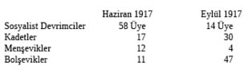

EKLER
BÖLÜM I’İN EKLERİ
Oborontsi – “Savunucular”. Savaşın ulusal bir savunma savaşı olduğunu ileri sürerek İtilaf Devletleri’nin önderliğinde savaşın devamına razı oldukları için, bütün “ılımlı” sosyalist gruplara bu ad verilmiş ya da onlar bu adı kabullenmişlerdir. Bolşevikler, Sol Sosyalist Devrimciler, Menşevik Enternasyonalciler (Martov grubu) ve Sosyal Demokrat Enternasyonalciler (Gorki grubu) İtilaf Devletleri’ni demokratik savaş amaçlarını açıklamaya ve bu şartları Almanya’ya teklif etmeye zorlamak istiyorlardı.
(2)
DEVRİMDEN ÖNCE VE DEVRİM SIRASINDA ÜCRETLER VE HAYAT PAHALILIĞI
Aşağıdaki ücret ve hayat pahalılığı tablosu, 1917 Ekiminde, Moskova Ticaret Odası ile Çalışma Bakanlığı Moskova Bölümü Ortak Komitesi tarafından hazırlanmış ve Novaya Jizn’in 26 Ekim 1917 tarihli sayısında yayımlanmıştır :
Gündelikler - (ruble ve kopek olarak)
1917 Mart Devrimi’nden hemen sonra ücretlerin çok yükselmiş olduğu hakkında anlatılan birçok hikayeye rağmen, Çalışma Bakanlığı tarafından bütün Rusya’daki şartların bir örneği olarak yayımlanan yukarıdaki tablo ücretlerin devrimden hemen sonra yükselmediğini, ancak yavaş yavaş yükseldiğini göstermektedir. Ortalama olarak ücretler yüzde 500’den biraz fazla artmıştır.
Ancak bu sırada rublenin değeri eski alım gücünün üçte birine düşmüş, ihtiyaç maddelerinin fiyatı çok artmıştır.
Aşağıdaki tablo Moskova Belediye Duması tarafından hazırlanmıştır. Moskova’da yiyecek Petrograd’dan daha ucuz ve daha boldu:
Yiyecek Fiyatları (Ruble ve kopek olarak)
Ortalama olarak gıda maddelerinin fiyatları yüzde 556, ya da ücretlerden yüzde 51 fazla artmıştı.
Öteki ihtiyaç maddelerinin fiyatları ise çok fazla artmış bulunuyordu.
Aşağıdaki tablo Moskova İşçi Sovyetleri Ekonomik Bölümü tarafından hazırlanmış ve Geçici Hükümet İaşe Bakanlığı tarafından doğruluğu tasdik edilmiştir:
Başka İhtiyaç Maddelerinin Fiyatları (ruble ve kopek olarak)
Ortalama olarak yukarıdaki ihtiyaç maddeleri yüzde 1109, yani ücretlerden bir misli fazla artmış bulunuyordu. Aradaki farkı, elbette vurguncular ve tüccarlar ceplerine indiriyorlardı.
1917 Eylülünde Petrograd’a vardığım sırada kalifiye bir işçinin ortalama gündeliği –örneğin, Putilov fabrikasındaki bir çelik işçisinin gündeliği– yaklaşık olarak 8 rubleydi. Bu sırada kâr hadleri de çok yüksek bulunuyordu... Petrograd dolaylarında bir İngiliz fabrikası olan Thornton Woollen Mills sahiplerinin bana anlattığına göre, fabrikada ücretler yüzde 300 arttığı sırada onların kârları yüzde 900’e kadar yükselmiş.
(3)
SOSYALİST BAKANLAR
Temmuzda kurulan Geçici Hükümet’teki sosyalistlerin, burjuva bakanlarıyla birlikte programlarını gerçekleştirmek için harcadıkları çaba, politikada sınıf savaşının aydınlatıcı bir örneğidir. Lenin bu konuda aşağıdaki açıklamayı yapıyor:
“Hükümetin izlediği politikanın daha fazla tutulamayacağını anlayan kapitalistler, 1848’den beri kapitalistlerin işçi sınıfını bulandırmak, bölmek, sonunda güçten düşürmek için kullandıkları bir yönteme başvurdular. Bu yöntem, ‘koalisyon kabinesi’ yöntemidir. Koalisyon kabinesini burjuvalarla sosyalist cepheden gelen dönekler kurarlar.
Siyasi özgürlüğün ve demokrasinin devrimci işçi hareketiyle yan yana bulunduğu ülkelerde, mesela İngiltere ve Fransa’da, kapitalistler bu düzenbazlığa başvururlar ve başarı da kazanırlar. Kabineye giren ‘sosyalist’ liderler yalnızca bir göstermelik, birer kukla, kapitalistleri gizleyen bir örtü, işçilerin aldatılmasına yarayan birer araçtırlar. Rusya’daki ‘demokratik’ ve ‘cumhuriyetçi’ kapitalistler de bu planı uygulamaya başladılar. Sosyalist Devrimcilerle Menşevikler bu planın kurbanları oldular ve 1 Haziranda Çernov, Tseretelli, Skobeliyev, Avksentiyev, Savinkov, Zarundi ve Nikitin ile ‘koalisyon kabinesi’ni kurdular.” (Devrim Problemleri)
(4)
EYLÜLDE MOSKOVA’DA YAPILAN BELEDİYE SEÇİMLERİ
Novaya Jizn 1917 Ekiminin ilk haftasında yapılan seçimin sonuçlarına ait aşağıdaki karşılaştırmalı tabloyu yayımladı ve bu seçimlerin mülk sahibi sınıflarla koalisyon yapma politikasının iflasını gösterdiğini yazdı. “Eğer iç savaştan hâlâ kaçınmak mümkünse, bu ancak bütün devrimci demokrasi kuvvetlerinin birleşik bir cephe kurmasıyla mümkündür...”
Moskova Merkez ve Yardımcı Dumaları için yapılan seçim sonuçları

(5)
GERİCİLERİN KÜSTAHLIĞI ARTIYOR
18 Eylül. Kadetlerden Şulgin, Kiev gazetelerinin birinde çıkan yazısında, Geçici Hükümet’in Rusya’yı bir cumhuriyet olarak ilan etmesi, elindeki iktidarı geniş bir şekilde kötüye kullanmasıdır, diyordu: “Biz ne cumhuriyeti ne de bugünkü cumhuriyet hükümetini kabul edebiliriz... Ve Rusya’da bir cumhuriyetin kurulmasını istediğimizden de emin değiliz...”
23 Ekim. Kadet Partisi’nin Riyazan’da yaptığı bir toplantıda M. Duhonin şunları söyledi: “Martın 1’inde bir meşrutiyet kurduk. Tahtın meşru varisi olan Mihail Aleksandroviç’i reddetmemeliyiz...”
27 Ekim. Moskova İşadamları Konferansı’nın aldığı karar: “Konferans... Geçici Hükümet’in, orduda acil olarak aşağıdaki tedbirleri almasında ısrar eder:
1. Her çeşit siyasi propaganda yasaklanacaktır; ordu politikadan uzak tutulacaktır.
2. Milliyet düşmanı enternasyonalci fikir ve teoriler, propagandalarında orduların gereksiz olduğunu söylemekte, böylelikle disiplini bozmaktadırlar; bunlar yasaklanmalı ve propagandacılar cezalandırılmalıdır...
3. Ordu komitelerinin görevleri yalnızca ekonomik sorunları kapsamalıdır. Aldıkları bütün kararları üst subaylar görmeli ve subaylar herhangi bir zaman komiteleri dağıtabilmelidir..
4. Orduda selam yeniden tesis edilmeli ve mecburi olmalıdır. Subayların tam bir disiplin kurma yetkisi bulunmalı ve verilen cezaları temyiz edebilmelidirler.
5. Askerleri itaatsizliğe kışkırtan harekete katılmak suretiyle orduyu lekeleyen subaylar subaylıktan çıkarılmalıdır... Bu amacı sağlamak üzere Şeref Mahkemeleri yeniden kurulmalıdır...
6. Geçici Hükümet, komitelerin ve öteki sorumsuz örgütlerin etkisiyle ordudan haksız yere çıkarılmış olan generallerin ve öteki subayların orduya dönmelerini sağlayacak tedbirleri almalıdır...”
BÖLÜM II’NİN EKLERİ
(1)
Kornilov isyanı bundan sonra çıkacak kitapta ayrıntılı olarak anlatılacaktır. Kitabın adı Kornilov’dan Brest-Litovsk’a’dır. Kornilov girişimini yaratan durumdan Kerenski’nin sorumlu olduğu artık açıkça meydana çıkmıştır. Kerenski’yi haklı göstermek isteyen birçok kimse, Kerenski’nin, Kornilov’un planlarını bildiğini, bir hile ile onu vaktinden önce hücuma geçirerek yendiğini söylerler. Oysa Mr. A. J. Sack bile The Birth of the Russian Democracy adlı kitabında şöyle der:
“Birçok şey..., hemen hemen kesindir. Bunlardan birincisi: Kerenski cephedeki bazı birliklerin Petrograd üzerine yürüyeceklerini biliyordu. Bolşevik tehlikesini gören bir Başbakan ve Savaş Bakanı olarak bu birlikleri kendisinin çağırmış olması ihtimali vardır...”
Bu düşüncenin tek yanlış yanı, o sırada “Bolşevik tehlikesinin” henüz ortaya çıkmamış olmasıdır. O sıralarda Bolşevikler sovyetlerde hâlâ küçük bir azınlıktı ve liderleri de, ya hapisteydi ya da gizlenmişlerdi.
(2)
DEMOKRATİK KONFERANS
Kerenski’ye bir demokratik konferansın toplanması teklif edildiği zaman, Kerenski ulusun bütün unsurlarından –o bunlara “zinde kuvvetler” diyordu– oluşan bir toplantı istedi. Konferansa bankerler, imalatçılar, toprak sahipleri ve Kadet Partisi’nin temsilcileri de katılacaklardı. Sovyet bu teklifi reddetti ve aşağıdaki temsil listesini sundu. Kerenski bu listeyi kabul etti.
100 delege Rusya İşçi ve Asker Delegeleri Sovyetleri’nden
100 delege Rusya Köylü Delegeleri Sovyetleri’nden
50 delege Taşra İşçi ve Asker Delegeleri Sovyetleri’nden
50 delege Köylü bölge ve toprak komitelerinden
100 delege Sendikalardan
84 delege Cephedeki ordu komitelerinden
150 delege İşçi ve köylü kooperatiflerinden
20 delege Demiryolu İşçileri Sendikası’ndan
10 delege Posta Telgraf İşçileri Sendikası’ndan
20 delege Ticaret memurlarından
15 delege Doktor, avukat, gazeteci gibi serbest meslek sahiplerinden
50 delege Taşra zemstvo’larından
50 delege Polonya, Ukrayna gibi milletleriıı milli örgütlerinden.
Bu oranlar iki üç kere değiştirildi. Delege durumu son olarak şöyle tespit edildi:
300 delege Rusya işçi, asker ve köylü delegelerinden
300 delege Kooperatiflerden
300 delege Belediyelerden
150 delege Cephedeki ordu komitelerinden
150 delege Taşradaki zemstvo’lardan
200 delege Sendikalardan
100 delege Ulusal örgütlerden
200 delege Muhtelif küçük gruplardan
(3)
SOVYETLERİN GÖREVİ BİTMİŞTİR
Çayika’nın organı olan İzvestiya, 28 Eylül 1917’de, son Geçici Hükümet kabinesine ait aşağıdaki yazıyı yayımladı:
“En sonunda, Rus halkının bütün sınıflarının iradesinden, gerçekten demokratik bir hükümet doğmuş ve gelecekteki liberal parlamenter rejimin ilk şekli kabaca kurulmuş bulunuyor. Önümüzde Kurucu Meclis var. Kurucu Meclis ana kanunların bütün sorunlarını çözecek ve demokratik unsurlardan oluşacaktır. Sovyetlerin görevi bitmiştir; bundan böyle barışçı araçlar kullanacak olan serbest ve başarılı bir halkın önünden, sovyetlerin bütün devrimci mekanizmalarıyla birlikte çekilecekleri gün yaklaşmaktadır.”
23 Ekim tarihli İzvestiya’nın başyazısı “Sovyet Örgütlerindeki Buhran” başlığını taşıyordu. Yazı, Rusya’da gezenlerin sovyet faaliyetinin her yerde azalmakta olduğunu söylediklerine dair bir açıklamayla başlıyordu. Yazar, “Bu normaldir,” diyordu. “Çünkü halk daha çok devamlı yasama organlarıyla –belediye dumaları ve zemstvo’larla– ilgilenmektedir.
Sovyetlerin en iyi şekilde örgütlenmiş bulundukları Petrograd ve Moskova gibi önemli merkezlerde, bütün demokratik unsurlar temsil edilmemektedir... Aydınların çoğunluğu katılmıyor, çoğu işçiler de öyle; bazı işçiler politika bakımından geri oldukları için, bazıları sendikalarda çalışmayı yeğledikleri için katılamıyorlar... Bu örgütlerin halk yığınlarıyla sıkı sıkıya bağlı olduklarını, halk yığınlarının ihtiyaçlarını daha iyi karşıladıklarını inkar edemeyiz...
Yerel demokratik idarelerin daha enerjik olarak örgütlenmesi gerektiği çok önemli bir gerçektir. Şehir Duması genel seçimle yönetimi ele almakta ve yerel konularda sovyetlerden daha çok otoriteye sahip bulunmaktadır. Hiçbir demokrat bunda yanlış bir taraf göremez.
“... Belediye seçimleri, sovyet seçimlerinden daha iyi ve daha demokratik olarak yönetilmektedir... Belediyelerde bütün sınıflar temsil edilmektedir... Ve belediyelerde yerel kendi kendini yönetme örgütlenmeye başlayınca, mahalli sovyetlerin rolü tabii olarak sona erecektir...
... Sovyetlere karşı gösterilen ilginin azalmasında iki faktör vardır. Birincisi, halk yığınlarında siyasi ilginin gittikçe azalması; ikincisi, taşradaki yerel yönetim kurullarının yeni Rusya’nın örgütlenmesi için gittikçe artan bir çaba harcamaları... Bu ikinci eğilim arttıkça sovyetlerin de önemi gittikçe ortadan silinmeye mahkûmdur...
Bize örgütümüzün ‘cenazesini’ kaldırdığımız söyleniyor. Oysa yeni Rusya’nın kurulması için en çok çalışan bizleriz...
Otokrasi ve bütün bürokratik rejim iflas ettiği zaman, bütün demokratik kuvvetlerin hiç olmazsa geçici bir sığınağı olsun diye sovyetleri kuran bizleriz. Şimdi geçici bir sığınak yerine sürekli bir yeni sistem kurmaktayız ve haIk da elbet geçici sığınakları bırakıp daha rahat olan sürekli binalarına çekilecektir...”
(4)
TROÇKİ’NİN RUSYA CUMHURİYETİ KONSEYİ’NDE VERDİĞİ SÖYLEV
“Çayika’nın toplantıya çağırdığı Demokratik Konferansın amacı, Kornilov’u ortaya çıkaran şahsa dayanan sorumsuz hükümeti düşürmek, savaşı bitirebilecek sorumlu bir hükümet kurmak ve Kurucu Meclis’in belirli zamanda toplanmasını sağlamaktı. Oysa, Demokratik Konferans’ın arkasında çevrilen dalavereler ve Yurttaş Kerenski ile Kadetler, Menşevik ve Sosyalist Devrimci Parti liderleri arasında yapılan pazarlıklar sonunda konferanstan, resmen açıklanan amacın tam tersi bir sonuç aldık. Kornilovcuların çevresinde ve içinde başlıca rol oynadığı bir iktidar yaratıldı. Rusya Cumhuriyeti Konseyi’nin bir yasama kurulu değil bir danışma kurulu olması gerektiği ilan edilmekle hükümetin sorumsuzluğu resmen açığa vurulmuş oldu. Sorumsuz hükümet, devrimin sekizinci ayında saklanmak için, kendine Bulyigin Duması tipinde yeni bir maske yaratmıştır.
Mülk sahibi sınıflar bu Geçici Konsey’e öyle bir orantıda katılmışlardır ki, ülkenin her yanında yapılan seçimlerin gösterdiği gibi, birçoklarının burada bulunmaya bile hakları yoktur. Kadet Partisi, Geçici Hükümet’ten, düne kadar Devlet Duması’na karşı sorumlu olmasını istediği halde aynı Kadet Partisi hükümetin Cumhuriyet Konseyi’nden bağımsızlığını sağlamış bulunuyor. Mülk sahibi sınıflar Kurucu Meclis’te bu konseydekinden daha az elverişli durumda bulunacaklar, Kurucu Meclis karşısında sorumsuz kalamayacaklardır.
Eğer mülk sahibi sınıflar bundan altı hafta sonra toplanacak olan Kurucu Meclis’e gerçekten hazırlanıyorlarsa hükümetin bu sırada sorumsuzluğunu tesis etmesine lüzum yoktur. Gerçek olan şu ki, Geçici Hükümet’in politikasına yön veren burjuvazinin amacı Kurucu Meclis’i sabote etmektir. İçeride ve dışarıda, bütün ulusal politikamızı denetlemekte olan mülk sahibi sınıfların bugün izledikleri ana politika budur. Hükümetle birlikte hareket eden mülk sahibi sınıfların sanayi, tarım ve iaşe alanlarındaki politikası savaşın yarattığı tabii örgütsüzlüğü arttırmaktadır. İç savaşı kışkırtan ve genişleyen açlık karşısında kendi politikalarını açıkça izleyen sınıflar devrimi ortadan kaldırmak ve Kurucu Meclis işini kapatmak niyetindedirler!
Burjuvazi ile hükümetin izlediği uluslararası politika da daha az alçakça değildir. Kırk aylık savaştan sonra başkent büyük bir tehlike ile karşı karşıyadır. Bu duruma bir çare olmak üzere hükümetin Moskova’ya taşınması planı ileri sürülüyor. Başkentin bırakılması fikri burjuvaziyi kızdırmıyor. Tersine devrim düşmanı komployu kışkırtmak için düşünülmüş genel politikanın tabii bir parçasıdır bu... Geçici Hükümet, yurt kurtuluşunun barışı gerçekleştirmekte olduğunu anlayacağı, diplomatları ve emperyalistleri atlayarak bütün savaştan bıkmış olan halklara hemen barış yapılması fikrini ortaya atacağı ve savaşın devamını imkânsız kılacağı yerde, Kadetlerin, karşıdevrimcilerin ve İtilaf Devletleri emperyalistlerinin emirlerine uyarak, anlamsızca amaçsız ve plansız olarak, bu canice savaşı sürdürmekte ve yeniden yüz binlerce askeri ve bahriyeliyi yararsız bir ölüme mahkûm etmekte, Petrograd’ı bırakmayı ve devrimi ortadan kaldırmayı tasarlamaktadır. Bolşevik askerler ve bahriyeliler, başkalarının hataları yüzünden öteki askerler ve bahriyelerle birlikte öldükleri bir sırada, Yüksek Komutan denen Kerenski Bolşevik basınını susturmakta devam ediyor. Konseyin belli başlı partileri bu politikaların gönüllü birer kamuflajı olmaktadırlar.
Sosyal Demokratların Bolşevik hizbi olan bizler, bu ihanet hükümetiyle hiçbir ortak yanımız olmadığını ilan ederiz. Resmî perdenin arkasında oynayan bu oyunla, halk katillerinin çalışmalarıyla ortak hiçbir yanımız yoktur. Bu işin bir gününü bile doğrudan doğruya ya da dolaylı olarak örtmeyi kabul etmiyoruz. Wilhelm’in askerleri Petrograd’ı tehdit ederlerken, Kerenski’nin ve Kornilov’un hükümeti Petrograd’dan kaçmaya ve Moskova’yı bir karşıdevrim üssü haline getirmeye hazırlanmaktadır.
Moskova’daki işçilere ve askerlere dikkatli olmalarını ihtar ediyoruz. Bu konseyi terk ederken bütün Rusya’daki işçilerin, köylülerin ve askerlerin insanlığına ve aklına başvuruyoruz. Petrograd tehlikededir! Devrim tehlikededir! Hükümet tehlikeyi arttırmıştır, hâkim sınıf bu tehlikeyi derinleştirmektedir. Yalnız halkın kendisi, yine kendisini ve ülkeyi kurtarabilecektir.
Halka başvuruyoruz. Yaşasın çabuk, namuslu, demokratik barış! Bütün iktidar Sovyetlere! Bütün topraklar halka! Yaşasın Kurucu Meclis!”
BÖLÜM III’ÜN EKLERİ
(1)
FABRİKA-ATÖLYE KOMİTELERİNİN ALDIĞI KARAR
İşçi Denetimi
1. (64. sayfaya bakınız).
2. Parti örgütleri politikada, sendikalar çalışmada, kooperatifler tüketim ve edebiyat kulüpleri kültür alanlarında nasıl sağlıklı birer örgüt iseler, İşçi Denetimi örgütü de sanayi üretimi alanında aynı sağlıklı faaliyetin bir belirtisidir.
3. Fabrikaların iyi ve aralıksız çalışmasında işçi sınıfının kapitalistlerden daha çok çıkarı vardır. İşçi Denetimi, bu bakımdan modern toplumun, bütün halkın çıkarları için, yalnızca kendi maddi kârlarını ya da siyasi imtiyazlarını düşünen fabrika sahiplerinin gelişigüzel kararlarından daha büyük bir güvenlik taşımaktadır. Bundan ötürü proletarya İşçi Denetimini yalnız kendi çıkarı için değil, bütün yurdun çıkarları için de istemektedir ve bu istek hem devrimci köylü hem de devrimci ordu tarafından desteklenmelidir.
4. Tecrübe gösteriyor ki, kapitalist sınıf çoğunluğunun devrime karşı düşmanca davranışı karşısında, hammaddelerin ve yakıtın iyi bir şekilde dağılımı, aynı zamanda fabrikaların verimli olarak işletilmesi İşçi Denetimi olmadan mümkün değildir.
5. Yalnız işçilerin işe karşı bilinçli tutumlarını besleyecek ve onlara işin sosyal anlamını anlatacak olan kapitalist teşebbüsler üzerindeki İşçi Denetimi, işte sağlam bir disiplin gelişmesine ve iş verimliliğinin artmasına yarayacak şartları yaratabilir.
6. Sanayinin savaş sanayisinden barış sanayisine çevrilmesi, işgücünün ülke üzerinde ve aynı zamanda çeşitli fabrikalar arasında yeniden dağılımı, büyük sarsıntılar olmadan, ancak işçilerin kendi kendilerini demokratik olarak yönetmesiyle mümkündür... Bundan ötürü İşçi Denetiminin gerçekleşmesi sanayinin seferber halden çıkarılması için zorunludur.
7. Rusya Sosyal Demokratik İşçi Partisi’nin (Bolşevikler) ilan etmiş olduğu slogan gereğince İşçi Denetiminin beklenen sonucu almak için ülke çapında bütün kapitalist girişimlere yaygınlaştırılması, bunun gelişigüzel ve sistemsiz olarak örgütlenmemesi gerekir. İşçi Denetimi iyice planlanmalı ve ülkenin sınai hayatının bütününden ayrılmamalıdır.
8. Ülkenin ekonomik hayatı –sanayisi, tarımı, ticareti ve ulaşımı– bir tek birleştirilmiş plana bağlı olmalı, bu plan büyük halk yığınlarının kişisel ve sosyal ihtiyaçlarını karşılayacak şekilde düzenlenmelidir; seçilmiş temsilciler tarafından onaylanmalı, ulusal ve yerel örgütler tarafından bu temsilcilerin direktifi altında yürütülmelidir.
9. Planın tarım işçileriyle ilgili olan kısmı köylü ve tarım işçileri örgütlerinin denetimi altında yürütülmelidir, ücretli işçiler tarafından işletilen sanayi, ticaret ve ulaşım ile ilgili kısmını ise İşçi Denetimi denetlemelidir. İşçi Denetiminin sınai fabrikalar içindeki tabii organları fabrika-atölye komiteleri ve buna benzer komiteler olacaktır; emek pazarında da sendikalar bulunacaklardır.
10. Herhangi bir işkolunda sendikaların işçilerin çoğunluğu için düzenlemiş oldukları toplu iş sözleşmeleri, belirli bir bölgede çalışan o çeşit işkolundaki bütün fabrika sahiplerini bağlamalıdır.
11. İstihdam büroları, sanayi planının bütünü çevresinde ve ona göre işleyen sınıf örgütleri olarak, sendikaların denetimi ve yönetimine bırakılmalıdır.
12. Sendikalar, iş sözleşmelerine ya da iş yasalarına aykırı hareket eden bütün işverenlere karşı ve aynı zamanda, herhangi bir işkolundaki tek bir işçi adına, kendi başlarına, yasal takibe geçme hakkına sahip olmalıdır.
13. Sendikalar, üretim, dağılım ve çalışma üzerindeki İşçi Denetimini ilgilendiren bütün sorunlar hakkında, fabrika-atölye komiteleri kanalıyla ayrı ayrı işletmelerin işçilerine danışmalıdır.
14. İşe girme ve işten çıkarma, tatil, ücret kademeleri, çalışmaktan kaçınma, verim ve ustalık derecesi, sözleşmeleri feshetme sebepleri, idare ile uzlaşmazlık sorunları ile fabrikanın iç işleyişini ilgilendiren buna benzer sorunlar, yalnızca fabrika-atölye komitesinin bulgularına göre çözümlenecek ve komite fabrika yönetiminin herhangi bir üyesini konuşmalara katılmaktan alıkoyabilme hakkına sahip olacaktır.
15. Fabrika-atölye komitesi, fabrikanın hammadde, yakıt, sipariş, işçi ve teknik eleman (teçhizat dahil) durumunu ve öteki bütün malzeme ve sözleşmelerini denetlemek ve aynı zamanda fabrikanın genel, sanayi planına bağlılığını sağlamak üzere bir komisyon kurar. Fabrika yönetimi İşçi Denetimi organlarına yarayacak bütün bilgiyi, işi ilgilendiren her türlü hususları komiteye bildirecek ve ona yardım edecektir; verilecek olan bu bilgilerin doğruluğunu sağlayacak ve fabrika-atölye komitesinin isteği üzerine şirketin defterlerini ibraz edecektir.
16. Fabrika-atölye komiteleri, yönetimin yasal olmayan herhangi bir hareketini tespit ettikleri ya da yalnız işçiler tarafından incelenmesine ya da önlenmesine imkân olmayan bu gibi yasadışı hareketlerden şüphelendikleri zaman, durum o iş kolundan sorumlu Fabrika-Atölye Komiteleri Bölge Merkez Örgütü’ne getirilecek, o örgüt de durumu genel sanayi planının uygulanmasından sorumlu kurumlarla tartışacak ve durumu önleyecek yollar bulacak, dahası fabrikayı müsadereye kadar gidecektir.
17. Çeşitli fabrikaların fabrika-atölye komiteleri birliği çeşitli sanayi kolları temeline göre kurulacak, böylelikle bütün sanayi kolları üzerindeki denetim kolaylaştırılmış ve genel sanayi planının içine alınmış olacaktır; ve, aynı zamanda, siparişlerin, hammaddelerin, yakıtın, teknik ve işgücünün çeşitli fabrikalar arasında verimli bir dağılım planı yaratılacak ve işkollarına göre örgütlenmiş olan sendikalarla işbirliği kolaylaşmış olacaktır.
18. Sendika ve fabrika-atölye komiteleri merkez şehir kurulları, genel sanayi planını işlemek ve uygulamak ve şehirlerle köyler (işçilerle köylüler) arasındaki ekonomik ilişkileri örgütlemek üzere kurulmuş olan taşra ve bölge kurumlarındaki proletaryanın karşılığıdır. Bunlar aynı zamanda, İşçi Denetiminin kendi bölgelerini ilgilendiren konularda, fabrika-atölye komiteleri ve sendika yönetimlerinin son yetkili katı olacaklar ve üretim rutininde işçi disiplinini ilgilendiren zorlayıcı yönetmelikler çıkaracaklardır. Bu yönetmelikleri, aynı zamanda, işçilerin kendi oylarıyla da onaylamaları gerektir.
(2)
BURJUVA BASINININ BOLŞEVİKLER ÜZERİNE YAZDIKLARI
Ruskaya Voliya. Ekim 28. “Son karar anı yaklaşıyor... Bu, Bolşevikler için son karar günüdür. Ya onlar bize... 16 - 18 Temmuz olaylarının bir ikincisini yaratacaklar, ya da, planları ve niyetleriyle, kendilerini bilinçlice ulusal olan her şeyden ayırmak isteyen boş politikalarıyla, yenildiklerini kabul edeceklerdir...
Bolşeviklerin başarı şansları nedir?
Buna cevap vermek zor, çünkü onların belli başlı desteği... halk yığınlarının cehaletidir. Bunu işliyorlar, hiçbir şeyin durduramayacağı bir demagoji ile bunun üzerinde çalışıyorlar...
Hükümet bu olaylara karışmalıdır. Cumhuriyet Konseyi’nin moral desteğini sağlayarak Bolşevikler karşısında kesin bir durum almalıdır...
Ve eğer Bolşevikler meşru iktidara karşı bir ayaklanmayı kışkırtacak ve Alman işgalini böylece kolaylaştıracak olurlarsa, onlara asi ve hain muamelesi yapılmalıdır...”
Birjevya Viyedomosti, Ekim 28. “Artık Bolşevikler kendilerini demokrasiden ayırmış bulunuyorlar; onlara karşı savaş çok kolaydır artık; ve Bolşevizme karşı çarpışmak için Bolşeviklerin gösteri yapacakları zamana kadar beklemek doğru değildir. Hükümet gösteriye bile izin vermemelidir...
“Bolşeviklerin ayaklanma ve anarşi çağrıları ceza mahkemelerince cezalandırılacak hareketlerdir ve en hür ülkelerde bile bunları yapanlar ağır cezalara çarptırılırlar. Çünkü Bolşeviklerin yaptığı, hükümet ya da dahası iktidara karşı siyasi bir savaş değildir; bu anarşi, kıyım ve iç savaş propagandasıdır. Bu propaganda kökünden kazınmalıdır; bir kıyım kışkırtmasına karşı harekete geçmek için kıyımın fiilen yapılmasına kadar beklemek garip olur...”
Novoye Vremya. Kasım 1. “... Neden hükümet 12 Eylül ya da 3 Ekim üzerinde durmuyor da 2 Kasım üzerinde duruyor? (Sovyetlerin kongre tarihi.)
Rusya ilk defa yanıp kül olmuyor, bu korkunç yangının dumanları Müttefikler’imizin gözlerini ilk defa yakmıyor...
Hükümet iktidara, geldiğinden beri anarşiyi durdurmak için bir tek karar çıkarmış mıdır ya da herhangi bir kimse Rus yangınını söndürmeye teşebbüs etmiş midir?
Yapılacak başka işler vardı...
Hükümet dikkatini daha acele bir soruna çevirmiştir. Bir ayaklanmayı (Kornilov teşebbüsü) bastırmıştır, şimdi herkes bu ayaklanma üzerine şunu soruyor: ‘Böyle bir şey var mıydı?’ ”
(3)
“ILIMLI” SOSYALİST BASININ BOLŞEVİKLER ÜZERİNE YAZDIKLARI
Diyelo Naroda (Sosyalist Devrimci). Ekim 28. “Bolşeviklerin devrime karşı işledikleri en büyük suç, halk yığınlarının çektiği büyük ızdırapları yalnızca devrimci hükümetin kötü niyetlerine yormalarıdır; oysa, aslında bu felaketler objektif nedenlerden ileri gelmektedir.
Hiçbirini tutamayacaklarını bildikleri halde halk yığınlarına büyük vaatlerde bulunuyorlar, halkı yanlış yola sürüklüyorlar, bütün dertlerin kaynağı olarak yanlış yeri gösteriyorlar...
Bolşevikler devrimin en tehlikeli düşmanlarıdır...
Diyen (Menşevik). Ekim 30. “‘Basın özgürlüğü’ gerçekten bu mudur? Novaya Rus ile Raboçi Put her gün açıkça ayaklanmayı kışkırtıyor. Bu gazeteler her gün sütunlarında fiilen suç işlemektedirler. Her gün halkı kıyıma sürüklemektedirler... ‘Basın özgürlüğü’ bu mudur..?
Hükümet kendisini ve bizi savunmalıdır. Kanlı ayaklanmalar yurttaşların hayatlarını tehlikeye attığı bir sırada hükümet makinesinin pasif kalmaması için direnmeye hakkımız vardır...”
(4)
“YEDİNSTVO”
Bolşeviklerin iktidarı ele geçirmesinden birkaç hafta sonra Plehanov’un gazetesi Yedinstvo yayımını kesti. Halk arasındaki söylentilerin tersine Yedinstvo Bolşevik hükümeti tarafından kapatılmış değildir; son sayısındaki bir bildiride aboneleri azaldığı için yayıma devam edemeyeceği bildiriliyordu...
(5)
AYAKLANMAYA KARŞI ÇAĞRI
Merkez Ordu Komitesi’nden
“... Her şeyden önce, birer halk kuvveti organı olan Cumhuriyet Konseyi’ne ve Çayika’ya uyarak Geçici Hükümet tarafından temsil edilen örgütlenmiş halk çoğunluğu iradesinin şaşmaz bir şekilde uygulanması üzerinde dayatıyoruz...
Bir hükümet buhranının, örgütsüzlük, ülkenin mahvı ve iç savaş yaratabileceği bir sırada bu iktidarı zorla alaşağı etmek için yapılacak bir gösteri, ordu tarafından devrim düşmanı bir hareket sayılacak ve silah zoruyla bastırılacaktır...
Özel grupların ve sınıfların çıkarları bir tek çıkara boyun eğmelidir, bu da üretimin arttırılması ve ihtiyaç maddelerinin iyi bir şekilde dağıtılması olmalıdır...
Sabotaj yapanlar, örgütleri bozanlar ya da düzensizlik çıkaranlar, bütün kaçaklar, aylaklar, yağmacılar, ordu gerisinde mecburi hizmete tabi tutulmalıdır...
Geçici Hükümet’i, halkın iradesini çiğneyen bu insanlardan bu devrim düşmanlarından, cephe gerisinde, cephede, düşman ateşi altındaki siperlerde, iş taburları kurmaya çağırıyoruz...”
(6)
6 KASIM GECESİ OLAYLARI
Akşama doğru Kızıl Muhafızlar burjuva basınının matbaalarını işgal etmeye başladılar. Bu matbaalarda Raboçi Put, Soldat ile yüz binlerce sayıda çeşitli bildiriler basılmaya başlandı. Şehir Milisine buraları temizleme emri verildi, ama Milis buralarda barikatlar kurulduğunu ve silahlı adamlarca korunduğunu gördü. Matbaalara hücum emrini alan askerler emre itaat etmediler.
Gece yarısına doğru bir albay bir yunker takımıyla “Serbest Düşünce” kulübüne geldi. Elinde Raboçi Put başyazarını yakalama emri vardı. Birden sokakta bir kalabalık toplandı ve yunker’leri linç etmek istedi. Bunun üzerine albay kendisinin ve yunker’lerin tutuklanarak Peter-Paul hapisanesinde emniyet altına alınmalarını rica etti. İsteği yerine getirildi.
Gece yarısı saat 1’de Smolni’den gelen bir asker ve bahriyeli kıtası Telgrafhane’yi işgal etti. 1.35’te Postahane işgal edildi. Sabaha doğru Askeri Otel ve saat 5’te Telefon Santrali ele geçirildi. Gün doğarken Merkez Bankası’nın çevresi sarıldı. Saat 10’da Kışlık Saray’ın çevresine bir asker kordonu çekildi.
BÖLÜM IV’ÜN EKLERİ
(1)
7 KASIM OLAYLARI
Kerenski sabah saat 4’ten gün ışıyıncaya kadar Petrograd Kurmay Karargâhında kaldı, Kazaklara ve Petrograd içinde ve çevresinde bulunan subay okullarındaki yunker’lere oradan emirler gönderdi. Hepsi de harekete geçemeyecekleri cevabını verdiler.
Şehrin komutanı Albay Polkovnikov, herhalde hiçbir planı olmadan, Kurmay ile Kışlık Saray arasında gidip geldi. Kerenski köprülerin açılması emrini verdi; üç saat hiçbir hareket görülmedi. Sonra bir subayla beş asker kendi kararlarıyla fırladılar. Kızıl Muhafız kordonunu yardılar ve Nikolay köprüsünü açtılar. Fakat onlar gider gitmez birtakım bahriyeliler hemen köprüyü yeniden kapadılar.
Kerenski Raboçi Put matbaalarının işgalini emretti. Görevi alan subaya bir manga asker verileceği söylendi; iki saat sonra birtakım yunker vaat edildi; sonra emir unutuldu.
Postahane ile Telgrafhane’nin yeniden ele geçirilmesine teşebbüs edildi; bir iki el ateş edildi, sonra hükümet askerleri artık sovyetlere karşı durmayacaklarını bildirdiler.
Yunker’lerden gelen bir heyete Kerenski şunları söyledi: “Geçici Hükümet’in Başkanı ve Yüksek Komutan olarak, ben hiçbir şey bilmiyorum. Size hiçbir tavsiyede bulunamam; ama eski bir devrimci olarak sizden, siz genç devrimcilerden, yerlerinizde kalmanızı ve devrimin kazançlarını korumanızı istiyorum.”
7 Kasım günü Kişkin’in verdiği emirler:
“Geçici Hükümet’in kararıyla... Petrograd’da düzenin yeniden kurulması için olağanüstü yetkilerle görevlendirilmiş bulunarak bütün sivil ve askeri makamların komutasını tamamıyla elime almış bulunuyorum...”
“Geçici Hükümet’in bana vermiş olduğu yetkilere dayanarak Albay George Polkovnikov’u Petrograd Askeri Bölge Komutanlığından affettim...”
Başbakan yardımcısı Konovalov’un 7 Kasımda imzaladığı Halka Çağrı:
“Yurttaşlar! Anayurdumuzu, cumhuriyeti ve özgürlüğünüzü koruyunuz. Manyaklar halkın şeçmiş olduğu tek hükümet olan Geçici Hükümet’e karşı ayaklanmış bulunuyorlar...
Geçici Hükümet’in üyeleri, anavatanın selameti, düzenin yeniden kurulması ve Rusya’nın ve Rus halklarının gelecekteki hâkimi olacak olan Kurucu Meclis’in toplanması için gereken görevleri yapacaklar, yerlerinde kalacaklar ve işlerine devam edeceklerdir...
Yurttaşlar, Geçici Hükümet’i desteklemelisiniz. Otoritesini kuvvetlendirmelisiniz. Bütün özgürlük ve düzen düşmanlarının ve çarlık rejimi taraftarlarının, devrimin kazançlarını ve anayurdumuzun geleceğini yok etmek, Kurucu Meclis’i yıkmak için katıldıkları bu manyaklara karşı geliniz...
Yurttaşlar, düzen ve bütün halkların mutluluğu adına, Geçici Hükümet’in otoritesini savunmak üzere Geçici Hükümet’in çevresinde örgütleniniz...”
Geçici Hükümet’in bildirisi:
“Petrograd Sovyeti... Geçici Hükümet’in yıkıldığını bildirmiş ve Peter-Paul kalesinin ve Neva’da demirli bulunan Avrora kruvazörünün toplarıyla Kışlık Saray’ı döveceğini söyleyerek iktidarın kendisine verilmesini istemiştir.
Hükümet, iktidarını ancak Geçici Meclise teslim edebilir; bu bakımdan hükümet teslim olmamaya, halktan ve ordudan yardım istemeye karar vermiş bulunuyor. Stavka’ya bir telgraf çekildi; kuvvetli bir asker kıtasının gönderilmekte olduğu cevabı alındı...
Ordu ve halk, cephe gerisinde isyan çıkarmak isteyen Bolşeviklerin bu sorumsuz teşebbüslerine katılmamalıdır...”
Sabah saat 9’a doğru Kerenski cepheye hareket etti.
Akşama doğru bisikletli iki asker Genelkurmay Karargâhı’nın önünde durdu ve kendilerinin Peter-Paul kalesi garnizonunun temsilcileri olduklarını söylediler. Askerler Kişkin, Rutenburg, Palçinski, General Bagratuni, Albay Paradiyelov ile Kont Tolstoy’un bulundukları kurmay toplantı odasına girerek kurmayın hemen teslim olmasını istediler; istekleri reddedildiği takdirde karargâh bombalanacaktı... Bir panik havası içinde geçen iki toplantıdan sonra kurmay Kışlık Saray’a çekildi ve karargâh Kızıl Muhafızlar tarafından işgal edildi...
Akşam geç vakit, birkaç Bolşevik zırhlı arabası Saray meydanının çevresinde dolaştı ve sovyet askerleri yunker’lere seslenmeye çalıştılar ama başaramadılar...
Saraya karşı ateş yaklaşık olarak akşam saat 7’de başladı...
Gece saat 10’da üç yandan birden topçu bombardımanı başladı mermilerin çoğu boşa düştü. Yalnız üç küçük şarapnel sarayın ön yüzüne çarptı...
(2)
KERENSKİ’NİN KAÇIŞI
7 Kasım günü sabah saat 7’de Petrograd’dan ayrılan Kerenski otomobille Gaçina’ya vardı, orada kendisine özel bir vagon verilmesini istedi. Akşama doğru Pskov vilayetinin bir kasabası olan Ostrov’daydı. Ertesi sabah Kazakların da katılmasıyla yerel İşçi ve Asker Delegeleri Sovyetleri’nin özel bir toplantısı yapıldı. Ostrov’da 6.000 Kazak vardı.
Kerenski toplantıda konuştu. Bolşeviklere karşı yardım istedi ve hemen hemen yalnız Kazaklara hitap etti. Asker delegeleri protesto ettiler.
“Neden buraya geldin?” diye bağrışmalar oldu. Kerenski cevap vererek, “Kazaklardan Bolşevik ayaklanmasını bastırmak için yardım istemeye!” dedi. Bu söz üzerine şiddetli protestolar oldu. Kerenski sözüne devam ettikçe gürültüler de arttı. “Kornilov teşebbüsünü ben önledim, Bolşeviklerinkini de ben önleyeceğim!” Gürültüler o kadar arttı ki, Kerenski kürsüden inmek zorunda kaldı...
Asker delegeleri ile Ussuri Kazakları Kerenski’yi yakalamaya karar verdiler, fakat Don Kazakları önlediler ve Kerenski’yi trenle oradan uzaklaştırdılar... O gün kurulan bir Askerî Devrimci Komite durumdan Pskov garnizonunu haberdar etmek istedi ama telefon telleri kesilmişti.
Kerenski Pskov’a varamadı. Devrimci askerler başkente asker gitmesin diye demiryolunu kesmişlerdi. Kerenski 8 Ekim gecesi otomobille Luga’ya vardı. Orada yerleşmiş bulunan Ölüm Taburları kendisini iyi karşıladılar.
Ertesi gün trenle güney batı cephesine gitti ve Karargâhtaki ordu komitesini ziyaret etti. 5. Ordu Bolşeviklerin başarı haberlerinden çok memnundu ve ordu komitesi Kerenski’ye herhangi bir yardım vaadinde bulunamayacağını söyledi.
Kerenski oradan Moghilev’deki Stavka’ya gitti. Oradan cephenin çeşitli bölümlerinden on alaya Petrograd’a yürüme emrini verdi. Askerler hemen hemen oybirliğiyle bunu reddettiler; yola çıkan alaylar da yolda durduruldular. Sonunda beş bin kadar Kazak Kerenski’yi izledi...
(3)
KIŞLIK SARAY’DA YAPILAN YAĞMA
Kışlık Saray’da yağma olmadığını iddia etmiyorum. Gerek Kışlık Saray’ın düşmesinden sonra ve gerekse önce, oldukça çok sayıda ufak tefek hırsızlıklar olmuştur. Sosyalist Devrimci gazete Narod ile Şehir Duması üyelerinin 500 milyon ruble değerinde eşya çalındığı iddiaları ise tamamıyla abartılıdır.
Saraydaki en önemli sanat hazineleri -tablolar, heykeller, halılar, az bulunan porselenler ve eski silahlar- Eylül ayında Moskova’ya nakledilmişti. Kremlin’in Bolşevikler tarafından alınmasından on gün sonra bu eserler İmparatorluk Sarayının alt katında iyi bir durumda idi. Ben buna kendim tanıklık ederim…
Kışlık Saray’ın alınmasından sonra birkaç gün sarayda serbestçe gezmesine müsaade edilen halk arasından bazı kimseler aşağı yukarı 50 bin ruble değerinde gümüş takımları, saatler, yatak örtüleri, bazı eski değerli vazoları ve yarı değerli taşları alıp götürmüşlerdir.
Bunun üzerine Sovyet hükümeti hemen, özel bir komisyon kurdu. Bu komisyonda sanatçılar ve arkeologlar vardı; çalınmış eşyayı bulmakla görevliydiler. Kasımın 11’inde iki bildiri yayımlandı:
PETROGRAD YURTTAŞLARI!
7- 8 Kasım gecesi Kışlık Saray’dan çalınmış olan eşyaları bulabilmek için çaba göstermelerini ve bulduklarını Kışlık Saray Komutanlığına getirmelerini bütün yurttaşlardan acele olarak rica ediyoruz.
Çalınmış eşyayı, antikaları alanlar ve bunları sakladıkları anlaşılanlar kanun bakımından sorumlu sayılacaklar ve bütün şiddetiyle cezalandırılacaklardır.
Müzeleri ve Sanat Koleksiyonlarını Koruma Komiserleri
G. YATMANOV, B. MANDELBAUM
ALAY VE DONANMA KOMİTELERİNE
7-8 Kasım gecesi, Rus halkının öz malı olan Kışlık Saray’dan değerli sanat eşyaları çalınmıştır.
Çalınmış olan eşyanın Kışlık Saray’a iadesi için her türlü çabayı göstermeye herkesi acele olarak çağırıyoruz.
Komiserler
G. YATMANOV, B. MANDELBAUM
Yağma edilmiş olan eşyanın aşağı yukarı yarısı bulundu. Bir kısmı da Rusya’dan kaçan yabancıların çantalarından çıktı.
Smolni’nin teklifi üzerine sanatçılardan arkeologlardan oluşan bir konferans toplandı. Konferans bir komisyon seçerek bu komisyona Kışlık Saray eşyalarının bir dökümünü yapma görevi verdi ve Petrograd’daki bütün sarayları, bütün sanat koleksiyonlarıyla devlet müzelerini bu komisyonun emrine verdi. 16 Kasımda Kışlık Saray halka kapatıldı. İçeride döküm yapılıyordu...
Kasımın son haftasında Halk Komiserleri Konseyi tarafindan bir kararname yayımlandı. Bu kararnameye göre Kışlık Saray’ın adı “Halk Müzesi”ne çevriliyor, Saray sanat ve arkeoloji komisyonlarının yönetimine bırakılıyor ve bundan böyle saray duvarları içinde herhangi bir hükümet faaliyeti yasaklanıyordu.
(4)
KADINLAR TABURU’NA YAPILAN TECAVÜZ
Kışlık Saray’ın Bolşevikler tarafından alınmasından hemen sonra sarayı savunan Kadınlar Taburu’nun başına gelenler üzerine Bolşeviklere karşı basında ve Şehir Duması’nda korkunç hikayeler anlatılmaya başlandı. Kimi kız askerlerin pencerelerden sokağa atıldıkları, geri kalanlardan çoğunun ırzına geçildiği ve birçoğunun korkunç olaylar karşısında dayanamayıp intihar ettiği söyleniyordu.
Şehir Duması durumu incelemek üzere bir komisyon kurdu. Komisyon 16 Kasımda Kadınlar Taburu’nun karargâhı olan Levaşovo’dan döndü. Madam Tirkova’nın verdiği rapora göre kızlar önce Pavlovski Alayı kışlasına alınmışlar, burada bazılarına kötü davranılmış; ama şimdilik kızların çoğu Levaşovo’da idi ve geri kalanlar da şehrin çevresindeki özel evlere dağıtılmış bulunuyordu. Komisyona dahil olan üyelerden Dr. Mandelbaum, hiçbir kadının pencerelerden atılmadığına, hiçbir kadının yaralanmadığına, üçünün ırzına geçildiğine, birinin intihar ettiğine ve intihar etmeden önce “ideallerinde hayal kırıklığına uğramış” bulunduğunu bildirdiğine tanıklık etti.
21 Kasımda Askerî Devrimci Komite, kızların kendilerinden gelen istek üzerine, Kadınlar Taburu’nu dağıttı. Kadınlar sivil elbiselerini giydiler.
Louise Bryant’ın Rusya’da Kızıl Altı Ay adlı kitabında o sıradaki kız askerlerin ilginç bir hikayesi vardır.
BÖLÜM V’İN EKLERİ
(1)
ÇAĞRILAR VE BİLDİRİLER
Askerî Devrimci Komite’den, 8 Kasım
Bütün cephe ve ordu gerisi, ordu, tümen, alay ve bölük komitelerine ve bütün İşçi, Asker ve Köylü Delegeleri Sovyetleri’ne.
Askerler ve devrimci subaylar!
Askerî Devrimci Komite, işçi, asker ve köylülerin çoğunluğu ile anlaşarak, General Kornilov’un, ve Kornilov fesadına katılanların Peter-Paul kalesine kapatılmasına ve bir askeri devrimci mahkeme önünde hesap vermek üzere derhal Petrograd’a getirilmesine karar vermiştir...
Bu kararın uygulanmasına karşı koyan herkesi komite devrim haini olarak ilan eder ve bunların bundan böyle vereceği emirleri hükümsüz ve boş sayar.
Petrograd İşçi ve Asker Delegeleri Sovyetleri’ne bağlı
Askerî Devrimci Komite
Bütün Taşra ve Bölge İşçi, Asker ve Köylü Delegeleri Sovyetleri’ne.
Rusya Sovyetler Kongresi’nin aldığı karar gereğince toprak komitelerinin tutuklanmış olan bütün üyeleri derhal serbest bırakılacaklardır. Onları tutuklamış olan komiserler tutuklanacaktır.
Bu andan itibaren bütün iktidar sovyetlerindir. Geçici Hükümet komiserleri yerlerinden atılmışlardır. Çeşitli yerel Sovyet başkanları devrimci hükümetle doğrudan doğruya ilişki kurmaya çağırılmışlardır.
Askerî Devrimci Komite
(2)
BELEDİYE DUMASI’NIN PROTESTOSU
“En ileri demokratik ilkelere dayanılarak seçilmiş olan Merkez Şehir Duması bu büyük düzensizlik sırasında belediye işleriyle yiyecek dağıtımı yükünü üzerine almış bulunuyor. Bugün, şu anda, Kurucu Meclis seçimlerine üç hafta kala ve dış düşman tehdidine rağmen, Bolşevik Partisi tek meşru devrimci iktidarı silah zoruyla yerinden indirmekle, belediye özerk yönetiminin haklarına ve bağımsızlığına karşı gelmeye teşebbüs etmekte, komiserlerine ve kanunsuz otoritesine boyun eğilmesini istemektedir.
Petrograd Şehir Duması bu korkunç ve trajik anda, seçmenlerinin ve bütün Rusya’nın karşısında haklarına ve bağımsızlığına yapılacak herhangi bir tecavüze boyun eğmeyeceğini, başkent halkının iradesiyle işgal etmiş olduğu sorumlu mevkide kalacağını yüksek sesle ilan eder.
Petrograd Merkez Şehir Duması, Rusya Cumhuriyeti’ndeki bütün dumaları ve zemstvo’ları Rus devriminin en büyük kazançlarından biri olan özerk halk yönetiminin bağımsızlığını ve dokunulmazlığını savunmak için kendi çevresinde toplanmaya çağırır.”
(3)
TOPRAK KARARNAMESİ - KÖYLÜ “NAKAZ”I
“Toprak sorunu ancak genel Kurucu Meclis tarafından kesin olarak çözülebilir.
Toprak sorununun çözüm yolu aşağıdaki şekilde olacaktır:
1. Toprakta özel mülkiyet ebediyen kaldırılmıştır; toprak satılamaz, kiralanamaz, ipotek edilemez, hiçbir suretle el değiştiremez. Bütün dini topraklar, soylulara ait topraklar, imparatora, manastırlara, kiliselere ait topraklar, mülki arazi, vakıf toprakları, özel malikâneler, köy arazileri, köylüye bırakılan topraklar ve başkaları, herhangi bir karşılık ödenmeden müsadere edilmiş, ulusun malı olmuştur ve bunları işleyen emekçilerin emrine verilmiştir.
Mülkiyet haklarının bu şekilde sosyal bir değişime uğraması yüzünden zarar görenler, kendilerini yeni şartlara uydurmaları için geçecek zaman içinde kamu yardımına hak kazanırlar.
2. Toprağın altında bulunan bütün zenginlikler –maden cevherleri, petrol, kömür, tuz vb.– ile ulusal değeri olan ormanlar ve sular tamamıyla devletin malıdır. Bütün ikinci derecedeki nehirler göller ve ormanlar, yerel hükümet organları tarafından yöneltilmek şartıyla yerel idarelere bırakılmıştır.
3. Bilimsel olarak işlenen bütün toprak parçaları –bahçeler, plantasyonlar, çocuk bahçeleri, seralar, tohum bahçeleri ve başkaları– bölünmeyecektir, yalnızca örnek çiftlikleri haline getirilecek ve büyüklüklerine ve önemlerine göre devlete ya da yerel idareye bırakılacaktır.
Binalar, ortak topraklar, özel bahçeleri, meyvalıkları olan köyler bugünkü sahiplerinin ellerinde kalacaktır; bu arazinin büyüklükleri ve kullanıldığı zaman verilecek vergisi kanunla tespit edilecektir.
4. Bütün ahırlar, resmî ve özel hayvan yetiştirme ve kuş besleme kurumları, ve başkaları, müsadere edilmiş ve ulusun malı olmuştur ve büyüklüklerine ve önemlerine göre devlete ya da yerel idareye devredilmiştir.
Yukarıdaki konu ile ilgili bütün tazminat konuları Kurucu Meclis’in yetkisi dahilindedir.
5. Müsadere edilmiş olan ve dökümü yapılmış bulunan tarım malları, makinalar ve hayvanlar, niteliğine ve önemine göre, devlete ya da yerel idareye intikal etmiştir. Bu gibi makinelerin ya da hayvanların müsaderesi köylülerin küçük çaptaki mallarına uygulanmaz.
6. Toprağı kullanma hakkı, toprağı ailelerinin ya da ortaklarının yardımıyla işlemek isteyen her yurttaşa, çalışabildiği sürece verilir. Para ile işçi çalıştırmaya izin verilmez.
Topluluğa mensup bir üye iki yıl süreyle çalışamayacak bir halde olursa, topluluk, toprağını ortaklaşa işlemek suretiyle ona yardım edecektir.
İhtiyarlık ya da hastalık dolayısıyla devamlı olarak toprağı kendi başına işleme yeteneğini yitiren çiftçiler topraklarını geri verecekler ve karşılığında hükümetten bir emekli maaşı alacaklardır.
7. Toprağın kullanımı eşit olacaktır; yani, toprak yerel koşullara, iş birimine ve bireyin ihtiyacına göre emekçiler arasında bölüştürülecektir.
Toprağın kullanılış şekli bireyler tarafından belirlenebilir: köyler ve köylerde oturanlar tarafından kararlaştırılacağı şekilde, ev olarak, çiftlik olarak, ortaklaşa ya da köy topluluğu tarafından işletilebilir.
8. Bütün topraklar müsadere edildikten sonra toprak, Genel Halk Toprak Fonu’nda toplanacaktır. Toprağın emekçilere dağıtımı, köyün demokratik örgütlerinden başlayarak merkez taşra kurumlarına kadar –şehir ve köy dernekleri buna katılmazlar– yerel ve merkezi yönetim organlarınca yürütülür. Toprak Fonu, nüfusun artışına, verimin yükselmesine ve köy ekonomisine göre zaman zaman yeniden dağıtıma tabi tutulur.
Tahsis edilen toprak sınırlarının değişmesi halinde ilk tahsis merkezi değişmez olarak kalır.
Topluluktan ayrılan kimselerin toprakları Toprak Fonuna iade edilir; ancak, çekilen kimselerin yakınları, ya da onlar tarafından gösterilecek dostları, o toprakların yeniden dağıtımı sırasında rüçhan hakkına sahip olacaklardır.
Topraklar Toprak Fonuna iade edildiği sırada toprağın gübrelenmesi ya da ıslahı için yapılmış olup karşılığı alınmamış bulunan bir masraf varsa bu masraf da iade edilir.
Toprak Fonu’nun yerel nüfusun ihtiyacını karşılamadığı yerlerde, nüfus fazlası başka topraklara nakledilir.
Göçlerin örgütlenmesi, masraflarının karşılanması, gerekli makine ve hayvanların sağlanması devletin görevidir.
Göçler şu sıraya göre yürütülecektir: Önce, göçmek isteyen topraksız köylüler, sonra, topluluğun istenmeyen üyeleri (kaçaklar vb.) ve en sonra anlaşma ile arazilerini verenler göç edecektir.
Bilinçli Rus köylülerinin büyük çoğunluğunun, tartışmasız iradesinin ifadesi olan bu nakaz’da yazılı olan her şey geçici bir kanun olup, Kurucu Meclis’in toplanmasına kadar, Bölge Köylü Delegeleri Sovyetleri tarafından tespit edileceği şekilde, mümkün olduğu kadar acele olarak, ve bazı bölümleri de yavaş yavaş, uygulanır.”
(4)
TOPRAK VE ASKER KAÇAKLARI
Hükümet asker kaçaklarının toprak sahibi olmaları konusunda herhangi bir karar almaya zorlanmadı. Savaşın son bulması ve ordunun terhisi otomatik olarak asker kaçağı sorununu ortadan kaldırdı.
(5)
HALK KOMİSERLERİ KONSEYİ
Halk Komiserleri Konseyi başlangıçta yalnız Bolşeviklerden oluşmuştu. Ama kusur büsbütün Bolşeviklerde değildir. 8 Kasımda Bolşevikler, Sol Sosyalist Devrimcilere sandalyeler teklif ettiler, onlar kabul etmediler.
BÖLÜM VI’NIN EKLERİ
(1)
ÇAĞRILAR VE SUÇLAMALAR
Bütün Yurttaşlara ve Sosyalist Devrimci Partinin Askeri Örgütlerine:
Bolşeviklerin anlamsız girişimleri tam bir fiyasko ile sonuçlanmak üzeredir. Garnizon tarafsız kalmıştır... Bakanlıklar çalışmıyor, ekmek azalıyor. Bir avuç Bolşevikten başka bütün partiler Sovyetler Kongresi’ni terk etmişlerdir. Bolşevikler yalnız kaldılar! Her çeşit kötüye kullanma, barbarlık ve yağma, Kışlık Saray’ın bombardımanı, gelişigüzel tutuklamalar... Bolşevikler tarafından işlenen bütün bu suçlar bahriyelilerin ve askerlerin çoğunluğunu kendilerine karşı çevirmiştir. Centroflot Bolşevik emirlerine itaat etmiyor...
Bütün aklı başında unsurları Yurt ve Devrim Kurtuluş Komitesi’nin çevresinde toplanmaya; Parti Merkez Komitesi’nin ilk çağrısında hazır olmak için gereken tedbirleri almaya; Bolşeviklerin giriştikleri bu serüvenden yararlanmaları kesin olan karşıdevrimcilerin yapacakları harekete karşı koymaya ve cephenin zayıfladığı bu sırada fırsattan yararlanmak isteyecek olan dış düşmana karşı tetikte bulunmaya çağırıyoruz...
Sosyalist Devrimci Parti Merkez Komitesi’nin
Askeri Bölümü
* * *
Pravda’dan:
“Kerenski kimdir?
Bir eşkıya. Yeri Kornilov ve Kişkin’le birlikte Peter-Paul zindanı.
Kendisine inanmış olan işçilere, askerlere ve köylülere ihanet etmiş bir cani.
Kerenski mi? Askerlerin katili!
Kerenski mi? Köylüleri darağacına gönderen bir adam!
Kerenski mi? İşçileri boğan adam!
Şimdi özgürlüğü öldürmek isteyen ikinci Kornilov da işte böyle bir adam!”
BÖLÜM VII’NİN EKLERİ
(1)
İKİ KARARNAME
Basın Üzerine
Devrimin bu kesin saatinde ve onu hemen izleyen günlerde, Geçici Devrimci Hükümet her çeşit eğilimdeki karşıdevrimci basına karşı birtakım tedbirler almak zorunda kalmıştır.
Yeni sosyalist iktidarın bu suretle basın özgürlüğüne karşı harekete geçerek kendi programının temel ilkelerini çiğnediği, her yanda, hemen bağırılmaya başlandı. İşçi ve köylü hükümeti, bu özgürlük maskesinin arkasında basından aslan payını almak ve böylelikle halkın kafasını zehirlemek ve yığınların bilincini bulandırmak isteyen zengin sınıfların çıkarlarının saklı olduğuna halkın dikkatini çeker.
Herkes bilir ki, burjuva basını burjuvazinin en güçlü silahlarından biridir. Özellikle şu anda, işçi ve köylü iktidarının perçinlenmeye başladığı sırada, burjuva basınının, bombalardan ve makineli tüfeklerden zarar görmediği bir zamanda, basını düşmanın eline bırakmak mümkün değildir. Bundan ötürü, sarı ve yeşil basının halkın genç zaferi üzerine fırlatacakları pislikleri önlemek amacıyla geçici ve olağanüstü tedbirler alınmış bulunuyor.
Yeni düzen perçinlenir perçinlenmez, basına karşı alınmış olan bütün idari tedbirler kaldırılacaktır; basına kanun karşısında sorumluluk sınırları içinde kalmak şartıyla, en geniş ve en ileri kanunlara göre tam bir özgürlük tanınacaktır...
Kritik anlarda bile alınacak basın özgürlüğünü kısıtlayıcı tedbirlerin ancak zorunluk sınırları içinde kabul edilebileceğini göz önünde bulunduran Halk Komiserleri Konseyi şu kararları almıştır:
1. Aşağıdaki kategorilere giren gazeteler kapatılacaktır: (a) İşçi ve köylü hükümetine karşı direnmeyi ya da itaatsizliği kışkırtanlar; (b) haberleri değiştirerek açıkça ve bilerek karışıklık yaratanlar; (c) kanunlarla cezalandırılacak suçları kışkırtanlar.
2. Halk Komiserleri Konseyi’nin vereceği bir kararla herhangi bir basın organı geçici olarak ya da tamamen kapatılacaktır.
3. İşbu kararname geçici olup normal hayat şartları yeniden kurulduğu zaman özel bir nakaz’la yürürlükten kaldırılacaktır.
Halk Komiserleri Konseyi Başkanı
VLADİMİR ULYANOV (LENİN)
* * *
İşçi Milisi Üzerine
1. Bütün İşçi ve Asker Delegeleri Sovyetleri birer işçi milisi kuracaklardır.
2. Bu işçi milisleri tamamıyla İşçi ve Asker Delegeleri Sovyetleri’nin emrinde olacaktır.
3. Askeri ve sivil makamlar işçilerin silahlanması ve teknik cihazlarla teçhiz edilmesi için her türlü yardımı yapacaklar ve dahası, hükümetin Ordu Dairesine ait silahları bile sağlayacaklardır.
4. Bu kararname telgrafla bildirilecektir .
Petrograd, 10 Kasım 1917.
İçişleri Halk Komiseri
A. İ. RİKOV
Bu kararname bütün Rusya’da Kızıl Muhafız kıtalarının kurulmasını hızlandırdı, bu kıtalar Sovyet hükümetinin iç savaşta en güçlü silahı oldu.
(2)
GREV FONU
Hükümet ve banka memurlarının grev fonu, Petrograd ve başka şehirlerdeki bankalar ve ticaret işletmeleri ve aynı zamanda Rusya’da çalışan yabancı şirketler tarafından sağlanmıştı. Bolşeviklere karşı greve katılanlara, maaşları olduğu gibi ve bazı hallerde de daha fazlası bile veriliyordu. Bolşeviklerin iktidara iyice oturmuş olduklarını anlar anlamaz parayı sağlayanlar grev tahsisatını kestiler ve sonunda da grev yürümedi.
BÖLÜM VIII’İN EKLERİ
(1)
KERENSKİ’NİN İLERLEYİŞİ
Kasımın 9’unda Kerenski ile Kazakları Gaçina’ya vardılar. Uzlaşmaz şekilde ikiye ayrılmış olan garnizon hemen teslim oldu. Gaçina Sovyeti’nin üyeleri tutuklandılar: Önce ölümle tehdit edildiler. Sonra iyi halden serbest bırakıldılar.
Kazak öncülerine hemen hemen kimse karşı koymadı, onlar da Pavlovsk, Aleksandrovsk ve öteki istasyonlara kadar ilerlediler ve ertesi sabah, 10 Kasım sabahı, Çarskoye Selo dolaylarına vardılar. Garnizon hemen üçe ayrıldı: subaylar Kerenski’ye bağlı kaldılar; askerlerin bir kısmı ile astsubaylar “tarafsızlıklarını” ilan ettiler; erlerin çoğu Bolşeviklerden yana çıktı. Lidersiz ve örgütsüz olan Bolşevik askerler başkente çekildiler. Yerel sovyet de Pulkovo köyüne çekildi.
Çarskoye Selo Sovyeti’nden altı üye Kazaklara propaganda yapmak için, yanlarına bir otomobil dolusu bildiri alarak, Pulkovo’dan Gaçina’ya hareket ettiler. Bütün gün Gaçina çevresindeki bir Kazak kışlasından ötekine giderek propaganda yaptılar, tartıştılar ve açıklamalarda bulundular. Akşama doğru bazı subaylar onların, orada olduklarını haber aldı. Hepsini yakalayıp General Krasnov’un önüne getirdiler. General onlara, “Önce Kornilov’a karşı çarpıştınız, şimdi de Kerenski’ye karşı çarpışıyorsunuz. Hepinizi kurşuna dizdireceğim!” dedi.
Krasnov kendisinin Petrograd Bölgesi Başkomutanı tayin edildiğini bildiren emri onlara okuduktan sonra Bolşevik olup olmadıklarını sordu. Hepsi de “Evet” cevabını verdi. Bunun üzerine Krasnov odadan çıkıp gitti. Az sonra bir subay geldi ve hepsini serbest bıraktı ve kendilerine General Krasnov’un emriyle serbest bırakıldıklarını söyledi...
Bu sırada Petrograd’dan boyuna heyetler geliyordu; Duma’dan, sovyet delegelerinden ve en sonunda, Vikjel’den. Demiryolu İşçileri Sendikası iç savaşı durdurmak için bir anlaşmaya varılması üzerinde direndi ve Kerenski’nin Bolşeviklerle uğraşmaktan ve Petrograd üzerine yürümekten vazgeçmesini istedi. Bu teklifin reddi üzerine Vikjel 11 Kasım gece yarısı genel bir greve gitme tehdidinde bulundu.
Kerenski konuyu sosyalist bakanlarla ve Kurtuluş Komitesi’yle konuşmasına müsaade edilmesini istedi. Kendisi besbelli kararsızdı.
Ayın 11’inde Kazak ileri karakolları Krasnoye Selo’ya vardılar; yerel sovyet ile Askerî Devrimci Komite’nin karmakarışık kuvvetleri buradan çekilmişlerdi, kimileri de teslim olmuştu... O gece Pulkovo’ya da vardılar ve orada ilk gerçek direnme ile karşılaştılar...
Kazak asker kaçakları Petrograd’a akmaya başladılar. Kerenski’nin kendilerine yalan söylediğini, cephe boyunca Petrograd’ın yanmakta olduğu, Bolşeviklerin Almanları çağırdığı ve kadınlarla çocukları kestikleri, önlerine geleni yağma ettikleri haberini yaydığını söylüyorlardı...
(2)
ASKERI DEVRİMCİ KOMİTE’NİN BİLDİRİLERİ
“Bütün İşçi, Asker ve Köylü Delegeleri Sovyetleri’ne,
İşçi, Asker ve Köylü Sovyetleri Rusya Kongresi, yerel sovyetleri, her çeşit karşıdevrimci, Yahudi düşmanı ve ne türlü olursa olsun bütün kıyımlara karşı en enerjik tedbirleri hemen almakla görevlendirir. İşçi, köylü ve asker devriminin şerefi herhangi bir karışıklığa göz yumulmamasını emreder...
Petrograd’daki Kızıl Muhafızlar, devrimci garnizon ve bahriyeliler başkentte tam bir düzen sağlamışlardır.
İşçiler, askerler ve Kazaklar, gerçek devrimci düzenin korunması görevi size düşmektedir.
Bütün devrimci Rusya’nın ve bütün dünyanın gözü üzerinizdedir...”
“Rusya Sovyetler Kongresi şunları kararlaştırmıştır:
Kerenski’nin cephede yeniden koymuş olduğu ölüm cezası kaldırılmıştır.
Bütün ülkede her türlü propaganda özgürlüğü yeniden kurulmuştur. Siyasi ‘suç’ denilen fiillerden ötürü tutuklanmış olan bütün askerler ve devrimci subaylar derhal serbest bırakılacaklardır.”
“Halk tarafından görevinden uzaklaştırılmış olan, eski Başbakan Kerenski Sovyetler Kongresi’nin kararlarına boyun eğmek istemiyor ve Rusya Kongresi’nin seçtiği meşru hükümet olan Halk Komiserleri Konseyi’ne karşı savaşmaya teşebbüs ediyor. Cephe Kerenski’ye yardım etmemiştir. Moskova yeni hükümetin yanında yer almıştır. Birçok şehirlerde (Minsk’de, Moghilev’de, Harkov’da) iktidar sovyetlerin elindedir. Hiçbir piyade kıtası, İşçi ve köylü hükümetine karşı yürümeye razı olmamıştır. Hükümet de ordu ve halkın kesin iradesine dayanarak barış konuşmalarına başlamış ve toprağı köylülere vermiştir...
Herkese haber veriyoruz ki, eğer Kazaklar kendilerini aldatan ve onları Petrograd üzerine yürüten Kerenski’yi durdurmayacak olurlarsa, devrimci kuvvetler, devrimin en değerli kazançları olan barışı ve toprağı korumak için bütün kuvvetleriyle ayağa kalkacaktır.
Petrogradlı Yurttaşlar! Kerenski, başkenti, onu Almanlara teslim etmek isteyen Kişkin’e; şehrin yiyecek dağıtımını sabote eden Siyahlar Çetesinden Rutenberg’e; demokrasiyi toptan inkar eden Palçinski’ye bırakıp gitti. Kerenski sizleri Almanlarla, kıtlıkla, kanlı kıyımlarla karşı karşıya bırakıp kaçtı. Başkaldıran halk Kerenski’nin bakanlarını yakaladı ve şimdi Petrograd’da düzenin ve iaşenin birdenbire nasıl düzeldiğini siz de görüyorsunuz. Kerenski, aristokrat mülk sahiplerinin, kapitalistlerin, vurguncuların isteği üzerine toprağı yeniden toprak sahiplerine vermek ve bu iğrenç ve yıkıcı savaşı sürdürmek için size karşı yürümektedir.
Petrograd Yurttaşları! Büyük çoğunluğunuzun devrimci halk iktidarından yana ve Kerenski’nin yönettiği Kornilovculara karşı olduğunu biliyoruz. Merhametsizce ezilecek olan güçsüz burjuva fesatçılarının yalancı bildirilerine aldanmayın.
İşçiler, askerler, köylüler! Sizden devrimci disiplin ve bağlılık istiyoruz.
Milyonlarca köylü ve asker bizimledir.
Halk devriminin başarısı sağlanmıştır!”
(3)
HALK KOMİSERLERİ KONSEYİ’NİN ÇIKARDIĞI KANUNLAR
Bu kitapta, yalnız, Bolşeviklerin iktidara gelmesiyle ilgili gördüğüm kararnameleri veriyorum. Geri kalanlar Sovyet devletini ayrıntılarıyla inceleyecek olanları ilgilendirir. Ben burada buna yer ayırmadım. Bunlar, şimdi hazırlamakta olduğum Kornilov’dan Brest- Litovsk’a adlı ikinci kitapta yer alacaktır.
Konutlar üzerine
1. Özerk Belediye idareleri bütün işgal edilmemiş ya da oturulmayan konutlara elkoyma hakkına sahiptir.
2. Belediyeler, kendileri tarafından düzenlenecek kanunlar ve yönetmelikler gereğince, bütün elverişli konutlara, oturacak yeri olmayan ya da, sıkışık ya da sağlığa aykırı yerlerde oturan yurttaşları yerleştirebilirler.
3. Belediyeler bir konut araştırma servisi kurabilir, örgütleyebilir ve yetkilerini tespit edebilirler.
4. Belediyeler ev komiteleri kurulması için emirler çıkarabilirler; örgütlerini, yetkilerini tespit edebilir ve onlara hukuki yetki tanıyabilirler.
5. Belediyeler konut mahkemeleri kurabilir, yetkilerini ve otoritelerini tespit edebilirler.
6. Bu Kararname telgrafla bildirilmiştir.
İçişleri Halk Komiseri
A. İ. RİKOV
Sosyal Sigorta Üzerine
Rus proletaryası bayraklarının üzerine ücretli işçilerin, şehir ve köydeki yoksul halkın bütünüyle sosyal sigortaya tabi olacağı vaadini yazmıştır. Çar hükümeti, mülk sahipleri ile kapitalistler ve de koalisyon ve uzlaşma hükümeti, emekçilerin sosyal sigorta konusundaki taleplerini gerçekleştirememişlerdir.
İşçi, Asker ve Köylü Delegeleri Sovyetleri’nin desteklediği İşçi ve Köylü Hükümeti, emek örgütlerinin teklif ettiği formüllere dayanarak, sosyal sigorta üzerine hemen kanunlar hazırlayacağını Rus emekçi sınıflarına, şehir ve köylerin yoksul halkına ilan eder:
1. Bütün ücretli işçilerle şehirlerdeki ve köylerdeki yoksul halk istisnasız sigorta edilecektir.
2. Sigorta çalışma yeteneğini kaybetme, hastalık, yetersizlik, ihtiyarlık, doğum, dulluk, öksüz kalma ve işsizlik gibi bütün alanları kapsayacaktır.
3. Sigortanın bütün masrafı işverenlere yükletilecektir.
4. Çalışma yeteneğinin kaybedilmesi ya da işsizlik halinde, en azından gündelik ücret tutarında tazminat verilecektir.
5. Bütün sigorta kurumları tamamiyle işçiler tarafindan yönetilecektir.
Rus Cumhuriyeti Hükümeti adına,
Çalışma Halk Komiseri
ALEKSANDR ŞLİYAPNİKOV
* * *
Halk Eğitimi Üzerine
Rusya Yurttaşları!
7 Kasım ayaklanması ile emekçi yığınlar ilk defa olarak iktidara kavuşmuşlardır. Rusya Sovyetler Kongresi bu iktidarı geçici olarak Yürütme Komitesi ve Halk Komiserleri’ne devretmiştir.
Devrimci halkın iradesiyle, Eğitim İşleri Halk Komiserliği’ne atanmış bulunuyorum.
Halk eğitimini genel olarak yürütme işi, bu görev merkezi hükümetin elinde bulundukça, Kurucu Meclis toplanıncaya kadar, Halk Eğitim Devlet Komisyonu’na bırakılmıştır. Başkanı ve yöneticisi Halk Komiseri’dir.
Bu devlet komisyonu hangi temel ilkelere dayanacaktır? Bu komisyonun yetki alanı nasıl tayin edilmiştir?
Eğitim Faaliyetinin Genel Çizgisi: Okuyup yazma bilmeyenlerin ve cahillerin çok olduğu bir ülkede, her gerçek demokratik iktidarın eğitim alanındaki amacı, bu karanlıkla savaşmak olmalıdır. Modern pedagojinin gereklerine uygun geniş bir okul ağı kurarak, herkesin okuyup yazmasını en kısa zamanda gerçekleştirmelidir; genel, zorunlu ve ücretsiz eğitim sistemini kurmalı ve aynı zamanda sınırsız Rusya’mız halkının genel eğitimi için gerekli olan güçlü halk öğretmenlerini en kısa zamanda yetiştirmek üzere öğretmen okulları ve seminerler açmalıdır.
Ademi Merkeziyet: Halk Eğitimi Devlet Komisyonu hiçbir zaman eğitim kurumlarını yöneten merkezi bir kuvvet değildir. Tersine, bütün okul işlerinin yerel yönetimlere bırakılması gerekir. Bağımsız olarak çalışıp kendi inisiyatifleriyle kendi kültür örgütlerini kuran işçi, asker ve köylülere, gerek devlet merkezince, gerekse belediyelerce özerklik tanınmalıdır.
Devlet Komisyonu’nun görevi, belediyelerin ve özel kurumların, özellikle de işçiler tarafından kurulacak olan sınıfsal karakterli olanların kaynaklarını örgütlemek konusunda maddi ve manevi yardımda bulunmak ve bu konuda bir irtibat kurmaktır.
Halk Eğitimi Devlet Komitesi: Gerek oluşumu ve gerekse değerli uzmanları bakımından oldukça demokratik bir kurum olan Halk Eğitimi Devlet Komitesi, devrimin başlangıcından beri, birçok kanun tasarıları hazırlamıştır. Devlet Komisyonu bu komite ile işbirliği yapmayı içtenlikle istemektedir.
Komisyon, komitenin bürosuna başvurarak aşağıdaki programın uygulanması için olağanüstü bir toplantı yapmasını istedi:
1. Komitede temsil edilme ile ilgili maddelerin daha geniş bir demokratlaştırma açısından yeniden gözden geçirilmesi.
2. Komite yetkilerinin genişletilmesi ve komitenin, Rusya’da halk eğitiminin demokratik ilkeler üzerine kurulmasını sağlamak amacıyla çıkarılacak kanunların tasarılarını hazırlayacak bir devlet kurumu haline getirilmesi için komitenin yetkilerinin yeniden gözden geçirilmesi.
3. Komite tarafından eskiden hazırlanmış olan kanunların, yeni Devlet Komisyonu ile birlikte, yeniden gözden geçirilmesi; çünkü komite bunları hazırlarken eski bakanların burjuva ruhunu hesaba katmış, onlar bu kanunlara bu dar şekliyle bile karşı koymuşlardı.
Kanunlar bu şekilde gözden geçirildikten sonra bürokrasiye ve formalitelere dalmadan, devrimci bir ruhla hemen uygulanacaktır.
Pedagoglar ve Uzmanlar: Devlet Komisyonu, eğitimcileri (pedagogları) ülkenin efendileri olan halkın eğitilmesi gibi parlak ve şerefli bir işe davet eder.
Hiçbir makam, eğitimcileri temsil edenlerin görüşlerini almadan halk eğitimi alanında herhangi bir tedbir alamaz.
Öte yandan, yalnız uzmanların işbirliğiyle de bir karar alınamaz. Bu madde genel eğitim kurumlarında yapılacak reformlarla ilgilidir.
Eğitimcilerin sosyal güçlerle işbirliği yapmaları için Komisyon, gerek kendi kuruluşu içinde ve gerekse Devlet Komitesi’nde ve bütün faaliyet alanlarında çalışacaktır.
Komisyon ilk görev olarak öğretmenlerin ve her şeyden önce, çok yoksul oldukları halde kültürün hemen hemen en önemli yardımcıları olan ilkokul öğretmenlerinin durumunun ıslahını ele alacaktır. Bu öğretmenlerin haklı istekleri ne pahasına olursa olsun derhal yerine getirilmelidir. Okullarda çalışan işçiler maaşlarının ayda yüz rubleye çıkarılmasını boşuna isteyip durdular. Rus halkının ezici çoğunluğunun öğretmenlerini daha uzun zaman sefalet içinde tutmak ayıptır.
Şu var ki, gerçek bir demokrasi yalnızca okuyup yazmayı öğretmekle, genel ilkokul eğitimi ile bitmez. Çeşitli sınıfları olan düzenli bir laik okul öğretimi de örgütlenmelidir. Bu ülkü her yurttaşın eşit olarak ve mümkünse daha yüksek eğitim görmesi demektir. Bu ülkü herkes için gerçekleşmediği sürece, okullardaki sınıflardan geçerek ve doğal olarak üniversiteye kadar gelmek –daha yüksek bir aşamaya geçmek– yalnızca öğrencinin yeteneğine bağlı olacaktır, aile kaynaklarına değil.
Gerçek demokratik bir eğitim örgütü sorununu çözmek, uzun, canice ve emperyalist bir savaş sonunda fakir düşmüş bir ülkede özellikle zordur; fakat iktidarı ele geçirmiş olan işçiler toplumda daha iyi bir duruma geçmek ve moral durumlarını yükseltmek için yaptıkları savaşta eğitimin en büyük araç olacağını unutmamalıdırlar. Halk bütçesinin başka fasıllarını kısmak pahasına da olsa eğitim masrafları daima yüksek tutulmalıdır. Büyük bir eğitim bütçesi bir ulusun gururu ve şerefidir. Rusya’nın oy hakkını kazanmış özgür halkları bunu unutmayacaklardır.
Okuyup yazma bilmemezlikle ve cehaletle savaş bütün çocuklar ve gençler için okul eğitimini sağlamaktan ibaret değildir. Büyükler de kendilerini okuyup yazma bilmemenin utandırıcı durumundan kurtarmak isterler. Büyükler için açılacak okullar genel halk eğitimi planında çok önemli bir yer almalıdır.
Öğretim ve Eğitim: Öğretim ile eğitim arasındaki ayrımın belirtilmesi gerekir.
Öğretim hazır bir bilginin öğretmen tarafından öğrencisine verilmesi demektir. Eğitim ise yaratıcı bir iştir. Bireyin kişiliği bütün hayatı boyunca “eğitilir,” biçimlenir, içeriği bakımından zenginleşir, daha güçlü ve daha etkin olur.
Emekçi halk yığınları –işçiler, köylüler, askerler– ilk ve ileri öğretim için susamış durumdadırlar. Ama onlar, aynı zamanda, eğitime de susamışlardır. Kendileri dışında hiçbir kuvvet, ne hükümet, ne aydınlar ona bunu sağlayamazlar. Okul, kitap, tiyatro, müze vb. bu konuda yalnızca yardımcı olabilir. Onların kendilerine göre, eskiden kültürü yaratmış olan hâkim sınıflardan ve aydınlardan çok farklı, kendi sosyal durumlarının yarattığı kendi görüşleri vardır. Kendi fikirleri, kendi heyecanları, kişilik ve toplum sorunlarını kendilerine göre ele alışları vardır. Şehir işçisi kendine göre, köy emekçisi de kendine göre, emekçilerin sınıf fikriyle karışmış açık bir dünya görüşü kuracaktır. Yakın kuşaklarımızın görecekleri ve katılacakları şu olaydan daha yüce ya da güzel bir olay olamaz: Emeğin kendi genel, zengin ve özgür ruhunun ortak çalışma ile kurulması.
Öğretim elbetteki önemlidir ama kesin değildir. Burada en önemli olan eleştiridir, yığınların kendi kendilerini yaratmalarıdır; çünkü bilim ve sanat ancak bazı bölümleri bakımından genel bir insansal önem taşırlar. Her köklü sınıf değişmesiyle büyük değişikliklere uğrarlar.
Bütün Rusya’da, özellikle şehir işçileri arasında, ve aynı zamanda köylüler arasında, güçlü bir kültür eğitimi hareketi başgöstermiştir; bu çeşit işçi ve asker örgütleri hızla çoğalmaktadır. Bunları bulmak, bunlara yardım etmek, bunların yolunu aydınlatmak devrimci ve halksever bir hareketin demokratik eğitim alanındaki ilk görevidir.
Kurucu Meclis elbette ergeç görevine başlayacaktır. Ülkemizde sosyal ve ulusal hayat düzenini ve halk eğitimi alanındaki örgütlerin genel karakterini bu meclis verecektir.
Ama, şimdi, iktidarın Sovyetler’e geçmiş olmasıyla Kurucu Meclis’in gerçekten demokratik karakteri teminat altına alınmış bulunuyor. Devlet Komitesi’ne dayanan Devlet Komisyonu’nun izleyeceği yol Kurucu Meclis’in etkisiyle pek az değişikliğe uğrayacaktır. Önceden belirlemek istememekle beraber, yeni halk hükümeti bu alanda ülkenin manevi hayatını olabildiği kadar erken eline almak ve uyandırmak için gerekli birçok tedbiri yerine getirmeye kendini yetkili bulmaktadır.
Bakanlık: Bugünün işleri bu arada Halk Eğitim Bakanlığı’nca yürütülmelidir. Sovyetler Yürütme Komitesi ve Devlet Komitesi tarafından seçilmiş olan Devlet Komisyonu kuruluşunda ve bünyesindeki gerekli değişikliklerden sorumlu olacaktır. Elbette ki, halk eğitimi alanındaki devlet otoritesi düzeni Kurucu Meclis tarafından tespit edilecektir. O zamana kadar bakanlık, gerek Devlet Komitesi’nin ve gerekse Devlet Halk Eğitimi Komisyonu’nun icra mekanizması görevini yapacaktır.
Ülkenin emekçi halkının ve namuslu aydınlarının azmi, ülkeyi acı buhranlarından kurtaracak ve tam bir demokrasiden geçirerek sosyalizme ve uluslararası kardeşliğe götürecektir.
Eğitim Halk Komiseri
A.V. LUNAÇARSKİ
* * *
Kanunların nasıl tasdik edileceği ve yayımlanacağı üzerine Kararname
1. Kurucu Meclis’in toplanmasına kadar, kanunların yürürlüğe girmesi ve yayımlanması, Rusya İşçi, Asker ve Köylü Delegeleri Sovyetleri Kongresi tarafından seçilmiş olan Geçici İşçi ve Köylü Hükümeti’nin alacağı kararla yürütülecektir.
2. Her kanun teklifi, yetkili halk komiseri tarafından imzalanarak ilgili bakan tarafından hükümetin incelemesine sunulur ya da hükümete bağlı yasama bölümü tarafından, bölümün şefince imzalanmış olarak sunulur.
3. Tasarı, sonra son şeklini alarak Rusya Cumhuriyeti adına hükümet tarafından tasdik edildikten sonra Halk Komiserleri Konseyi Başkanı tarafından ya da onun adına tasarıyı hükümetin incelemesine sunmuş olan halk komiseri tarafından imzalanır ve sonra yayımlanır.
4. “Geçici İşçi ve Köylü Hükümeti Gazetesi”nde yayımlandıktan sonra yürürlüğe girer.
5. Kararnamede, yayım tarihinden ayrı olarak, kanun olarak yürürlüğe gireceği ya da telgrafla yayımlanacağı tarih de gösterilmiş olabilir; bu takdirde telgrafın yayımlandığı yerde yayımlandığı tarihte yürürlüğe girer.
6. Devlet Senatosu’nun çıkardığı kanunların yayımlanması yasak edilmiştir. Halk Komiserleri Konseyi’ne bağlı Yasama Bölümü periyodik olarak Hükümet kararname ve yönetmeliklerini yayımlar ve bunlar da kanun hükmündedirler.
7. İşçi, Köylü ve Asker Delegeleri Sovyetleri Merkez Yürütme Komitesi (Çayika) herhangi bir hükümet kararını iptal, değiştirme ya da hükümsüz sayma yetkisine her zaman sahiptir.
Rusya Cumhuriyeti adına
Halk Komiserleri Konseyi Başkanı
V. ULYANOV - LENİN
(4)
İÇKİ SORUNU
Askerî Devrimci Komite’nin Yayımladığı Emir
1. Alkol ve alkollü içkilerin üretimi yeni bir emre kadar yasaklanmıştır.
2. Bütün alkollerin ve alkollü içki üreticilerine ayın 27’sine kadar depolarının tam yerlerini bildirmeleri emredilmiştir.
3. Bu emre karşı gelecek olan herkes Askerî Devrimci Komite Mahkemesi tarafından yargılanacaktır.
ASKERİ DEVRİMCİ KOMİTE
BÖLÜM IX’UN EKLERİ
(1)
ASKERİ DEVRİMCİ KOMİTE’NİN 2 NO’LU BÜLTENİ
12 Kasım, akşamüstü, Kerenski devrimci askerlere bir teklif gönderdi: “Silahlarınızı bırakın.” Kerenski’nin adamları topçu ateşi açtılar. Topçumuz buna cevap verdi ve düşmanı susturmaya mecbur oldu. Kazaklar saldırıya kalktılar. Bahriyelilerin, Kızıl Muhafızların ve askerlerin öldürücü ateşi altında Kazaklar çekilmeye mecbur kaldılar. Zırhlı otomobillerimiz düşman saflarının içine kadar girdi. Düşman kaçıyor. Kıtalarımız arkalarında. Kerenski’yi tutuklama emri verilmiştir. Çarskoye Selo devrimci kıtalar tarafından alınmıştır.
Litvanyalı Nişancılar: Askerî Devrimci Komite, cesur Litvanyalı nişancıların cepheden geldikleri ve Kerenski’nin haydutlarının gerisinde mevzi aldıklarına dair kesin haberler almış bulunmaktadır.
Askerî Devrimci Komite Kurmayından
Gaçina ve Çarskoye Selo’nun Kerenski kıtaları tarafından işgali buralarda top ve makineli tüfeklerin hiç bulunmamasıyla izah edilebilir. Oysa Kerenski’nin süvarisinde başlangıçtan beri topçu kuvveti vardı. Son iki gün içinde kurmayımız devrimci kuvvetler için gerekli sayıda top, makineli tüfek, sahra telefonu vb. sağlanması işiyle durmadan uğraşmıştır. Bu iş bölge sovyetlerinin ve fabrikaların (Putilov, Obukov vb.) yardımıyla başarıldığında bir çatışmanın olacağı şüphesizdi; devrimci kuvvetlerin tarafında yalnız fazla sayıda malzeme ve aynı zamanda Petrograd gibi güçlü bir malzeme üssü değil, aynı zamanda, muazzam bir de moral avantaj vardı. Petrograd’daki bütün alaylar büyük bir hevesle mevzilerine girdiler. Garnizon Konferansı beş askerden oluşan bir Kontrol Komisyonu kurdu, böylece Başkomutan’la garnizon arasında tam bir birlik sağlandı. Garnizon Konferansı’nda derhal harekete geçilmesine oybirliğiyle karar verildi.
12 Kasımda açılan topçu ateşi öğleden sonra saat 3’e kadar olağanüstü bir kuvvetle devam etti. Kazakların morali tamamiyle bozuldu. Bir parlamento üyesi Kazaklar tarafından Krasnoye Selo’daki kurmaya gönderildi. Üye, ateşi kesmemizi istedi, aksi halde “kesin” tedbirler alacağını söyledi. Kendisine, ancak Kerenski silahlarını bıraktığı zaman ateşi keseceğimiz cevabı verildi.
Gelişmekte olan çatışmalarda kıtaların bütün bölümleri –bahriyeliler, askerler ve Kızıl Muhafızlar– sınırsız bir cesaret göstermişlerdir. Bahriyeliler son mermileri bitinceye kadar ilerlemeye devam etmişlerdir. Yaralı ve ölü sayısı bilinmiyor; ama karşıdevrimci kuvvetlerin kayıpları daha çok, çünkü zırhlı otomobillerimizden biri onlara büyük kayıplar verdirdi.
Askerlerinin teslim olacağından korkan Kerenski kurmayı çekilme emri verdi. Bu emir hızla ve büyük bir karışıklık içerisinde yerine getirildi. Geceleyin saat 11-12’de Çarskoye Selo, telsiz istasyonu ile birlikte, tamamıyla Sovyetler tarafından işgal edilmiş bulunuyordu. Kazaklar Gaçina ve Kolpino’ya doğru kaçtılar.
Askerlerin morali ne kadar övülse azdır. Çekilmekte olan Kazakların ardını bırakmamaları için gereken emir verilmiştir. Çarskoye Selo’daki istasyondan cepheye ve Rusya’daki bütün mahalli Sovyetlere hemen bir radyo-telgraf gönderilmiştir. Yeni haberler ayrıca bildirilecektir.
(2)
PETROGRAD’DA 13 KASIM OLAYLARI
Petrograd garnizonunun üç alayı Kerenski’ye karşı savaşa katılmayı reddetti. Askerler, 13 Kasım günü, iç savaşı durdurmak amacıyla cepheden gelen altmış delegeyle birlikte bir toplantı yaptılar. Bu toplantıda Kerenski askerlerini silahlarını bırakmaya teşvik etmek üzere bir komite tayin edildi. Komite hükümet askerlerine aşağıdaki soruları soracaktı: (1) Kerenski askerleri ve Kazakları, Çayika’yı Sovyetler Kongresi’ne karşı sorumlu bir hükümet kuvveti olarak tanıyorlar mıydı? (2) Askerler ve Kazaklar Toprak ve Barış kararnamelerini kabul edecekler miydi? (3) Çatışmaların kesilmesine ve birliklerine dönmelerine razı olacaklar mıydı? (4) Kerenski’yi, Krasnov’u ve Savinkov’u tutuklamaya razı mıydılar?
Petrograd Sovyetinin toplantısında Zinovyev şunları söyledi: “Komitenin işi bitireceğini sanmak budalalık olur. Düşman ancak kuvvetle kırılabilir. Ama Kazakları kendi yanımıza çekmek için barışçı yolların her türüne başvurmamak bizim için bir suç olur... Bize gereken askeri bir zaferdir... Ateşkes haberleri daha mevsimsizdir. Kurmayımız, düşman artık zararsız duruma geldiği zaman bir ateşkes anlaşması yapmaya hazır bulunacaktır.
Bugün için başarımızın etkisi yeni siyasi şartlar yaratmaktadır... Bugün Sosyalist Devrimciler Bolşevikleri yeni hükümete almaya razı olmuşlardır... Kesin bir başarı kaçınılmaz olmuştur, duraksayanlar artık duraksamaz olacaklardır...”
Şehir Duması’nda bütün dikkatler yeni hükümetin kurulması üzerinde toplanmıştı. Birçok fabrika ve kışlada devrimci mahkemeler kurulmuş, çalışıyordu ve Bolşevikler bu çeşit birçok mahkeme kuracaklarını, Gotz ile Avksentiyev’i buralarda yargılayacaklarını söylüyorlardı. Dan bu devrimci mahkemelerin dağıtılmasını, aksi halde konferansın öteki üyelerine Bolşeviklerle yapılan konuşmalara derhal son verilmesini isteyen bir ültimatomun gönderilmesini teklif etti.
Kadetlerden Şingariyov belediyenin Bolşeviklerle hiçbir uzlaşmaya yanaşmamasını istedi... “Silahlarını bırakmadıkça ve bağımsız mahkemelerin otoritesini tanımadıkça delilerle herhangi bir uzlaşma yapmak mümkün değildir...”
Yedinstvo grubundan Yartsev, Bolşeviklerle yapılacak herhangi bir anlaşmanın Bolşevikler için bir başarı olacağını söyledi…
Sosyalist Devrimciler adına konuşan Belediye Başkanı Şrayder, Bolşeviklerle herhangi bir anlaşma yapılmasına karşı olduğunu açıkladı... “Halkın iradesine dayanan bir hükümet olarak ve halk iradesi de belediye seçimlerinde ifade edilmiş bulunduğuna göre, bir hükümet kurabilecek halk iradesi Duma’da toplanmış demektir...”
Birçok konuşmacının arasında, yalnız Menşevik Enternasyonalcilerin temsilcisi, Bolşeviklerin yeni hükümete alınmasından yana konuştu. Konuşmalardan sonra duma, Vikjel Konferansı’nda temsilci bulundurmaya devam edilmesine, ancak her şeyden önce Geçici Hükümet’in yeniden kurulması ve Bolşeviklerin yeni iktidardan uzak tutulması üzerinde dayatılmasına karar verdi...
(3)
ATEŞKES. KRASNOV’UN KURTULUŞ KOMİTESİ’NE CEVABI
Derhal bir ateşkes anlaşmasına varılması için göndermiş olduğunuz telgrafa cevaben şunu bildiririm ki, boş yere daha fazla kan akıtılmasını istemeyen Başkomutan, görüşmelere başlamaya ve hükümet ordularıyla ayaklananlar arasında ilişkiler kurmaya razıdır. Kendisi alaylarını Petrograd’a çekmelerini, Ligovno-Pulkovo-Kolpino’yu tarafsız ilan etmelerini, hükümet süvarisinin düzeni kurmak üzere Çarskoye Selo’ya girmesine izin verilmesini ayaklananların Genelkurmay’ına teklif eder. Bu teklifin cevabı yarın sabah saat sekizden önce habercilerimizin eline verilmiş olmalıdır.
KRASNOV
(4)
ÇARSKOYE SELO’DAKİ OLAYLAR
Kerenski’nin Çarskoye Selo’dan çekildiği günün akşamüstü, kimi papazlar şehrin caddelerinde dinsel bir gösteri yürüyüşü düzenlediler. Yurttaşlara söylevler verdiler. Yurttaşlardan meşru hükümet olan Geçici Hükümet’i desteklemelerini istediler. Kazaklar çekildikten sonra şehre Kızıl Muhafızlar girdi. Görenlerin anlattığına göre papazlar halkı sovyetlere karşı kışkırtmışlar, Krallık Sarayının arkasında yatan Rasputin’in mezarında dualar etmişler. Peder İvan Kuçurov adında bir papaz yakalanmış ve hiddetli Kızıl Muhafızlar tarafından kurşuna dizilmiş...
Kızıl Muhafızlar şehre girer girmez elektrikler kesilmiş, bütün sokaklar kapkaranlık olmuş. Elektrik santralinin müdürü Liboviç sovyet askerleri tarafından yakalanmış ve kendisine neden elektrikleri kestiği sorulmuş. Az sonra kendisini hapishanede elinde tabanca ve başında bir kurşun yarasıyla bulmuşlar.
Ertesi gün Petrograd’ın Bolşevik düşmanı gazetelerde şu manşetler çıktı: “Plehanov’un ateşi 39!” Plehanov Çarskoye Selo’da oturuyordu, yatağında hasta yatıyordu. Kızıl Muhafızlar evine girmişler, silah aramışlar, ihtiyar adama şunu sormuşlar:
“Toplumun hangi sınıfındansınız?”
PIehanov, “Ben bir devrimciyim, hayatının kırk yılını özgürlük savaşı için harcamış bir devrimci!” demiş. İşçi, “Ne olursa olsun,” demiş, “şimdi kendini burjuvaziye sattın ya!”
Rus Sosyal Demokrasisinin öncüsü olan Plehanov’u işçiler artık tanımıyorlardı!
(5)
SOVYET HÜKÜMETİNİN ÇAĞRISI
“Kerenski tarafından aldatılmış bulunan Gaçina’daki kıtalar silahlarını bırakmışlar ve Kerenski’yi yakalamaya karar vermişlerdir. Karşıdevrimin başı kaçmıştır. Ordu, büyük bir çoğunlukla kendi yaratmış olduğu İkinci Rusya Sovyetler Kongresi’nden ve onun hükümetinden yana olduğunu açıklamıştır. Sovyet Hükümetine bağlılıklarını bildirmek üzere cepheden yüzlerce delege Petrograd’a gelmektedir. Gerçeklerin tahrifi, devrimci işçilere, askerlere ve köylülere karşı yapılan iftiraların hiçbiri halkı yenememiştir.
Çayika karşıdevrimin bayrağı altındaki askerlere seslenir ve onları hemen silahlarını bırakmaya çağırır. Bir avuç toprak sahibi ve kapitalistin çıkarı için artık boş yere kardeşlerinizin kanlarını akıtmayınız. İşçi, Asker ve Köylü Devrimi, halk düşmanlarının bayrağı altında bir an bile kalanları lanetlemektedir.
Kazaklar! Halkın saflarına geliniz! Demiryolcular, postacılar, telgrafçılar... hepiniz, ama hepiniz halkın yeni hükümetini destekleyin.”
BÖLÜM X’UN EKLERİ
(1)
KREMLİN’DE HASAR
Kremlin’i bombardımandan hemen sonra gezdim ve yapılan hasarı gözlerimle gördüm. Grand düşeslerinden birinin ara sıra verdiği davetlerde kullanılan ve pek fazla önemi olmayan Küçük Nikola Sarayı, yunker’lerin kışlası olmuş. Bina yalnız bombardıman edilmekle kalmamış, oldukça da hasara uğramış. Neyse ki, içinde tarihsel değeri olan hiçbir şey yokmuş.
Uspenski katedralinin kubbelerinin birinde bir mermi deliği vardı. Tavandaki birkaç metre mozaikten başka hiçbir yerde hasar yok. Blagoveçenski katedralinin avlusundaki freskler oldukça hasara uğramış. Başka bir mermi de İvan Veliki’nin köşesine çarpmış. Çudovski manastırına belki otuz mermi düşmüş, ancak bir mermi pencereden içeriye girmiş, ötekiler pencere kenarlarını ve saçakları hasara uğratmış.
Spaskaya kapısındaki saat parçalanmış. Troitski kapısına isabetler olmuş ama hasar önemli değil. Alt kulelerden birinin tuğla kemeri yok olmuş.
St. Basil kilisesine bir şey olmamış. Nitekim Büyük Kral sarayında da bir hasar yok. Moskova ve Petrograd’daki bütün değerli şeyler, Hazine’nin malı olan mücevherli taçlar bodruma indirilmiş. Buralara girilmemiş bile.
(2)
LUNAÇARSKİ’NİN BİLDİRİSİ
“Yoldaşlar! Siz yurdun genç sahiplerisiniz ve her ne kadar yapılacak ve düşünülecek çok işleriniz varsa da, yine de sanat ve bilim hazinelerini korumasını bilmelisiniz.
Yoldaşlar! Moskova’da olup geçen olaylar korkunçtur, tamir edilmez bir felakettir... İktidar savaşına girişmiş olan halk şanlı başkentimizi tahrip etmiştir.
Bu şiddetli mücadele ve tahripçi savaş günlerinde eğitim bakanı olmak özellikle korkunç. Yalnız, yeni ve üstün bir kültürün kaynağı olan sosyalizmin zafere kavuşması umudu bana ferahlık vermektedir. Halkın sanat hazinesini koruma sorumluluğu benim üzerime yüklenmiştir... Etkili olamadığım mevkimde kalamayarak istifa ettim. Yoldaşlarım, öteki komiserler bu istifayı kabul etmediler. Onun için yerimde kalıyorum... Ve, bundan başka, Kremlin’e yapılan zararın söylendiği kadar ciddi olmadığını öğrenmiş bulunuyorum...
Fakat, yoldaşlar, rica ediyorum beni destekleyiniz... Yurdumuzun güzelliğini kendiniz ve gelecek kuşaklar adına koruyunuz; halk mallarının koruyucusu olunuz.
Az, çok az bir süre sonra, uzun zaman cahil tutulmuş olan en cahil insanlar bile uyanacak ve sanatın ne kadar büyük bir sevinç, güç ve bilgelik kaynağı olduğunu anlayacaklardır.”
(3)
DEVRİMCİ MALİ TEDBİR
Emir
Moskova İşçi ve Asker Delegeleri Sovyeti’ne bağlı Askerî Devrimci Komite’nin bana vermiş olduğu yetkiye dayanarak aşağıdaki hususları emrediyorum:
1. Bütün bankalar şubeleriyle birlikte, Devlet Merkez Bankası ve şubeleri ve postahanelerde bulunan mevduat bankaları da dahil, 11 Kasımdan itibaren yeni bir emre kadar sabah saat 11’den öğleden sonra saat 1’e kadar açık bulundurulacaktır.
2. Mevduat bankalarının cari hesaplarından ve cüzdanlarından yukarıdaki kurumlar tarafından gelecek hafta içinde 150 rubleyi geçmeyen ödeme yapılacaktır.
3. Cari hesaplardan ya da mevduat bankası cüzdanlarından haftada 150 rubleyi geçecek ödeme ile başka hesaplardan yapılacak her türlü ödemeye, önümüzdeki üç gün içinde, yani 22, 23 ve 24 Kasım günleri aşağıdaki durumlarda izin verilecektir:
(a) Askeri örgütlerin hesaplarından ihtiyaçlarını karşılamak için;
(b) Fabrika komiteleri ya da memur sovyetleri tarafından tasdik edilmiş, komiserlerin ya da Askerî Devrimci Komite temsilcisinin ve Bölge Askerî Devrimci Komitesi’nin imzasını taşıyan cetvel ve listelere göre memur maaşları ve işçi ücretlerinin verilmesi için.
4. Poliçelere 150 rubleden fazla ödenmez; bakiyesi cari hesaba alınır ve bu emre göre ödenir.
5. Bu üç gün içinde bütün öteki banka işlemleri yasaktır.
6. Bütün hesaplara istenildiği kadar para yatırılmasına izin verilmiştir.
7. Madde 3’te gösterilen yetkiyi tasdik edecek Maliye Konseyi delegeleri sabah saat 10’dan öğleden sonra saat 2’ye kadar İlyinka caddesinde Borsa binasında bulunacaklardır.
8. Bankalarla mevduat bankaları günlük para işlemi tutarlarını akşamüstü saat 5’e kadar Skobeliyev meydanında, Sovyet Merkezi’nde bulunan Askerî Devrimci Komite’ye, Maliye Konseyi namına göndereceklerdir.
9. Bu emre uymayan her ceşit kredi kurumunun memur ve müdürleri halka karşı, devrim mahkemelerinde, devrim düşmanları gibi sorumlu olacaklardır. Adları herkesin bilmesi için açıklanacaktır.
10. İşbu emrin çerçevesine giren mevduat bankaları ve bankaların şube işlemlerini denetlemek üzere bölge Askerî Devrimci Komiteleri üçer temsilci seçecek ve çalışma yerlerini bildireceklerdir.
Askerî Devrimci Komite’nin Tam Yetkili Komiseri
S. ŞEVERDİN - MAKSİMENKO
BÖLÜM XI’İN EKLERİ
(1)
BU BÖLÜM’ÜN SINIRLARI ÜZERINE
Bu bölüm aşağı yukarı iki aylık bir dönemi kapsar. Müttefiklerle konuşmalar, Almanlarla konuşmalar ve ateşkes, Brest-Litovsk’da barış konuşmalarının başlaması ve Sovyet devletinin temellerinin atılması bu döneme rastlar.
Bununla beraber bu çok önemli tarihsel olayları anlatmak ve yorumlamak niyetinde değilim. Bunlar için daha geniş yere ihtiyaç var. Kornilov’dan Brest-Litovsk’a adlı eserimde bunları anlatacağım.
Bu bölümde Sovyet Hükümeti’nin, siyasal iktidarını perçinlemek için giriştiği teşebbüslerle yetindim ve yurt içindeki düşman unsurları birbiri ardına nasıl ele geçirdiğini anlattım. Ne var ki bu ikinci çeşit olayları felaketli Brest-Litovsk görüşmeleri geçici olarak kesmiştir.
(2)
KARARNAMELER
Bankaların Millileştirilmesi
Milli ekonominin düzenli olarak örgütlenmesi, banka spekülasyonlarının kökünden kazınması ve işçilerin, köylülerin ve bütün emekçi halkın banka sermayesinin sömürüsünden tamamıyla kurtulması için, halkın ve yoksul sınıfların gerçek çıkarlarına hizmet edecek tek bir Rusya Cumhuriyeti Bankası kurmak amacıyla Merkez Yürütme Komitesi (Çayika) aşağıdaki kararı almıştır :
1. Banka işlemlerinin bir devlet tekeli olduğu ilan olunur.
2. Bütün mevcut özel banka şirketleri ve bankalar, Devlet Bankası olmuşlardır.
3. Tasfiye edilen kurumların aktif ve pasiflerini Devlet Bankası üzerine almıştır.
4. Özel bankaların Devlet Bankası haline geliş şekli ayrıca bir kararname ile tespit edilecektir.
5. Özel banka işlemlerinin geçici yönetimi Devlet Bankası kuruluna bırakılmıştır.
6. Küçük mevduat sahiplerinin çıkarları teminat altına alınacaktır.
Orduda Seçim Prensibi ve Otorite Örgütlenmesi
1. Emekçi halkın iradesine hizmet eden ordu, halkın temsilcisi olan Halk Komiserleri Konseyi’ne bağlıdır.
2. Askeri birliklerin sınırları içinde, tam yetki asker sovyeti komitelerindedir.
3. Bugüne kadar komitelerin yetkileri içinde bulunan faaliyetler artık doğrudan doğruya bu komitelerin denetimine verilmiştir. Komitenin üzerine alamayacağı faaliyet alanlarında, asker sovyetlerinin denetimi kurulmuştur.
4. Komuta heyetinin ve subayların seçimle atanması usulü getirilmiştir. Alay komutanlarına kadar, alay komutanları dahil, bütün komutanlar, manga, takım, bölük, batarya, tümenlerde ve alaylarda yapılacak (topçularda 2-3 bataryada) genel seçimlerle yerlerine geleceklerdir. Alay komutanından Yüksek Komutan’a kadar, Yüksek Komutan dahil, bütün yüksek subaylar komitelerin kongreleri ya da konferansları tarafından seçilir.
Not : “Konferans” terimiyle bir kademe aşağıdaki komitelerin delegeleriyle ilgili komitelerin toplantısı kastedilmektedir (örneğin alay komitelerinin, bölük komitelerinden gelen delegelerle “konferansı” - Yazar).
5. Alay komutanı kademesine kadar olan kademelerde seçilen komutanların en yakın Yüksek Komite tarafından tasdiki gerektir.
Not : Seçilmiş bir komutanın Yüksek Komite tarafından, red sebebi gösterilmek şartıyla, reddedilmesi halinde, daha aşağı kademe tarafından bir ikinci kere seçilecek komutanın onayı gerektir.
6. Ordu komutanları ordu kongrelerince seçilir. Cephe komutanları ilgili cephelerin kongreleri tarafından seçilir.
7. Özel bir bilgi isteyen ya da pratik bir hazırlığı gerektiren teknik karakterdeki doktorluk, mühendislik, teknikerlik, telgrafçılık ve telsiz operatörlüğü, havacılık, otomobilcilik gibi yerlere ancak aranılan özel bilgiye sahip olan kimseler, ilgili hizmetlerin birlik komitelerince seçilir.
8. Kurmay başkanları bu mevki için gereken askeri eğitimi görmüş olan kimseler arasından seçilmelidir.
9. Kurmayın bütün öteki üyeleri Kurmay Başkanı tarafından tayin edilir ve ilgili kongrelerce tasdik olunur.
Not : Özel eğitim görmüş olanlar ayrı bir listede gösterilir.
10. Askerler tarafından herhangi bir aktif hizmete seçilmiş olan komutanların bulundukları yerden çekilme hakkı saklıdır; çekilen komutan er sınıfına döner.
11. Ekonomik bürolardaki yerler dışında, komutanlık dışındaki bütün görevlere seçimle gelmiş ilgili komutanlar tayin edilir.
12. Komuta personelinin seçimine dair ayrıntılı yönetmelikler ayrıca yayımlanacaktır.
Halk Komiserleri Konseyi Başkanı
V. ULYANOV (LENİN)
Konsey Sekreteri
N. GORBUNOV
Askerlik ve Donanma
İşleri Halk Komiseri
N. KRİLENKO
Askerlik İşleri Halk Komiseri
N. PODVOYSKİ
(3)
Kontes Panina tutuklandı ve birinci Yüksek Devrim Mahkemesinin önüne çıkarıldı. Kontesin mahkemesi yakında çıkacak olan Kornilov’dan Brest-Litovsk’a adlı kitabımda anlatılacaktır. Kontes, “Parayı iade etmeye ve sonra genel suçlamaya terk edilerek serbest bırakılmaya” mahkûm edildi. Kısacası, serbest bırakıldı!
(4)
YENİ REJİMLE ALAYLAR
18 Kasım tarihli Menşevik gazetesi Drug Naroda’dan:
“Bolşeviklerin ‘derhal barış’ hikayesi bize eğlenceli bir filmi hatırlatıyor... Neratov koşuyor, Troçki de arkasında; Neratov duvarı tırmanıyor, Troçki de; Neratov suya dalıyor, Troçki de arkasında; Neratov dama çıkıyor, haydi Troçki de arkasından; Neratov yatağın altına saklanıyor ve Troçki sonunda yakalıyor! Elinde! Tabii barış hemen imzalanıyor...”
Dışişleri Bakanlığı’nda herkes boş ve sessiz oturuyor. Kuryeler saygılı, ama yüzlerinde acı bir ifade var...
Bir elçiyi tutuklayıp kendisiyle bir ateşkes ya da barış antlaşması imzalasak ne dersiniz? Ama bu elçi denen adamlar çok garip kişiler. Sanki hiçbir şey işitmemişler gibi ağızlarını açmıyorlar. Yaşasın İngiltere, Yaşasın Fransa, Yaşasın Almanya! Bakın işte sizlerle bir ateşkes anlaşması imzaladık gitti! A, ne tuhaf, hiç mi haberiniz yok? Gazeteleri, duvarlara yapıştırılan bildirileri de mi okumadınız? Bir Bolşevik şeref ve namusu üzerine yemin ediyorum ki size, barış imzalandı. Sizden çok bir şey istemiyoruz; iki kelimecik bize yazıverin yeter...
Elçiler hiç ağızlarını açmıyorlar. Devletler ağızlarını açmıyorlar. Dışişleri Bakanlığı’nda herkes boş ve sessiz oturuyor.
Robespiyer-Troçki, yardımcısı Marat-Uritzki’ye, ‘Dinle,’ diyor, ‘hemen İngiliz Elçisine koş ve kendisine barış teklif ettiğimizi söyle.’
Marat-Uritzki, ‘Kendiniz gidin,’ diyor, ‘Kabul etmiyor.’
‘Telefon et öyleyse.’
‘Denedim. Telefon kesik.’
‘Telgraf çek.’
‘Çektim.’
‘Peki, sonuç?’
Marat-Uritzki içini çeker ve cevap vermez, Robespiyer-Troçki kızarak köşeye tükürür...
Troçki az sonra, ‘Bana bak, Marat,’ der, ‘gerçekten aktif bir dış politika izlediğimizi göstermek zorundayız. Bunu nasıl başarabiliriz?’
Uritzki ciddi bir havayla, ‘Neratov’un tutuklanması için yeni bir karar daha çıkarın,’ der.
Troçki, ‘Marat,’ der, ‘sen çok aptalsın!’ Birdenbire kalkar, korkunç ve muhteşemdir, Robespiyer gibi bakmaktadır.
Ciddi bir tavırla, ‘Yaz, Uritzki!’ der. ‘Yaz, İngiliz Elçisine iadeli taahhütlü bir mektup yaz. Sen yaz! Sonra bir de ben yazarım! Dünya halkları hemen barış istiyor.’
Muazzam ve boş Dışişleri Bakanlığı’nda yalnız daktilo makinelerinin tıkırtıları işitilmektedir. Ve Troçki kendi eliyle aktif bir dış politika yürütmektedir...”
(5)
ŞARAP “POGROM”LARI
Askerler arasında isyanı körüklemek amacıyla Kadetler tarafından kurulmuş düzenli bir örgütün bulunduğu sonradan anlaşıldı. Şarapların bedava verildiği yerlerin adresleri çeşitli kışlalara telefonla bildirilmiş ve askerler söylenen yere gittiklerinde deponun yerlerini gösteren adamlara rastlamışlar...
Halk Komiserleri Konseyi sarhoşlukla savaşmak üzere bir komiser atadı. Komiser şarap isyanlarını yalnız merhametsizce bastırmakla kalmadı, aynı zamanda yüz binlerce şişe içkiyi de imha etti. İlk olarak beş milyon dolardan fazla değer taşıyan Kışlık Saray mahzenindeki nadide şaraplar akıtıldı, sonra içkiler Kronştad’a taşınılarak orada imha edildi.
Troçki’nin “Devrimci güçlerin iftiharı ve çiçeği,” dediği Kronştad bahriyelileri bu sırada sıkı bir disiplin gösterdiler.
(6)
VURGUNCULAR
Vurguncular üzerine iki karar çıkarıldı:
Halk Komiserleri Konseyi’nden Askerî Devrimci Komite’ye
Savaşın iaşe dağıtımında yarattığı örgütsüzlük ve sistemsizlik, vurguncular ve yağmacılarla onların demiryollarında, vapur işletmelerinde, nakliye bürolarında vb.deki uşakları yüzünden, son derece kötü bir duruma girmiştir.
Ulusun içinde bulunduğu felaketten yararlanan bu menhus hırsızlar kendi çıkarları için milyonlarca askerin, işçinin hayatıyla ve sağlığıyla oynamaktadırlar.
Bu durum bir gün daha süremez.
Halk Komiserleri Konseyi spekülasyonun, sabotajın, istifçiliğin vb. nin kökünün kazınması için en kesin tedbirlerin alınmasını Askerî Devrimci Komite’ye teklif eder.
Bu gibi suçları işleyen kimseler, Askerî Devrimci Komite’nin özel emirleriyle, derhal yakalanacak ve devrimci mahkeme huzuruna çıkıncaya kadar Kronştad zindanlarında muhafaza edileceklerdir.
Bütün halk örgütleri, gıda maddelerini yağma edenlere karşı yürütülen mücadelede işbirliği yapmaya çağrılır.
Halk Komiserleri Konseyi Başkanı
V. ULYANOV (LENİN)
Uygulanmak üzere kabul eden,
İşçi ve Asker Delegeleri Sovyetleri Merkez Yürütme
Komitesine bağlı Askerî Devrimci Komite
Petrograd, Aralık 23, 1917.
* * *
Bütün Namuslu Yurttaşlara
Dalavereciler, soyguncular, spekülatörler halk düşmanı ilan edilmişlerdir...
Askerî Devrimci Komite bütün halk örgütlerine, bütün namuslu yurttaşlara, öğrendikleri her dalavere, soygun, vurgun vakasını derhal Askerî Devrimci Komite’ye bildirmelerini teklif eder.
Kötülüğe karşı savaş bütün namuslu insanların görevidir. Askerî Devrimci Komite halkın çıkarlarına saygı duyan herkesin desteğini bekliyor.
Askerî Devrimci Komite spekülatörleri ve dalaverecileri merhametsizce kovalayacaktır.
ASKERİ DEVRİMCİ KOMİTE
Petrograd, 2Aralık 1917.
(7)
PURİŞKEVİÇ’İN KALEDİN’E MEKTUBU
“Petrograd’ın durumu çok kötüdür. Şehir dünyadan koparılmıştır ve tamamıyla Bolşeviklerin elindedir... Halk sokaklarda tutuklanıyor, Neva’ya atılıyor, hiçbir suçlama yapılmadan boğduruluyor ve hapse atılıyor. Burtzev bile Peter-Paul zindanında, şiddetli bir göz hapsi altındadır.
Başında bulunduğum örgüt, dinlenmeksizin subayları ve yunker okullarından kalanları birleştirmeye ve onları silahlandırmaya çalışmaktadır. Subay ve yunker kıtaları kurulmadan durum düzeltilemez. Bu kıtalarla saldırdıktan ve ilk başarıyı kazandıktan sonra garnizonlardaki askerlerin yardımını elde edebiliriz ama bu ilk başarı olmadan bir tek askere bile güvenilemez; çünkü binlercesi aralarında bölünmüş ve her kıtada bulunan pis insanlar tarafından korkutulmuşlardır. Bolşevik propagandası Kazakların çoğunu zehirlemiştir. Bunda, bir şeyler elde edilebilecek kesin hareket zamanını kaçıran General Dutov politikasının büyük rolü vardır. Konuşma ve taviz politikası meyvalarını vermiştir; saygıya değer olan her şey yok edilmiştir ve hâkim olanlar plebler ve katillerdir. Bunları vurmaktan ve asmaktan başka çare yoktur.
Biz sizi buraya bekliyoruz, General. Ve geldiğiniz an elimizdeki bütün kuvvetlerle ileri harekete girişeceğiz. Ama bunun için sizinle birtakım karşılıklı konuşmalara girişmemiz ve her şeyden önce, aşağıdaki noktaları açıklığa kavuşturmamız gerekir:
(1) Savaşa katılabilecek olan subayların, sizin adınıza, size katılmak üzere Petrograd’ı terk etmeye çağrıldıklarını biliyor musunuz?
(2) Petrograd’a aşağı yukarı ne zaman geleceğinizi tahmin ediyorsunuz? Harekâtımızı koordine edebilmek için bunu bilmemiz gerekir.
Bolşevizm boyunduruğunu başımıza geçiren aklı başında adamların burdaki hareketsizliğe rağmen –örgütlenmesi çok zor olan subaylar çoğunluğunun kalınkafalılığına rağmen– gerçeğin bizden yana olduğuna, yurt sevgisinden hareket ettiklerini ve yurdu kurtarmak istediklerini söyleyen kötü ve canice kuvvetleri yeneceğimize inanıyoruz. Başımıza ne gelirse gelsin yenilmeyeceğiz ve sonuna kadar dayanacağız...”
Purişkeviç devrimci mahkeme karşısına çıkarılmış ve kendisine kısa bir hapis cezası verilmiştir.
(8)
İLANLARIN TEKEL ALTINA ALINMASI ÜZERİNE KARARNAME
1. Gazetelerde, kitaplarda, ilan yerlerinde, ilan kulelerinde, bürolarda ve başka yerlerde ilan yayımlanmasının devlet tekelinde bulunduğu ilan olunur.
2. İlanlar ancak Petrograd’daki Geçici İşçi ve Köylü Hükümeti’nin ve yerel sovyetlerin organlarında yayımlanabilir.
3. Gazete ve ilan büroları sahipleriyle bu gibi kurumların bütün memurları, ilan işlerinin Hükümete devredilmesine kadar yerlerinde kalacaklardır... Bürolarının devamlı olarak çalışmasına nezaret edecekler, bütün özel ilanları ve bunlar dolayısıyla aldıkları paraları, hesapları ve hesapların kopyalarını Sovyetlere intikal ettireceklerdir.
4. Bütün yayın müdürleri ile paralı ilan işiyle uğraşan kurumların müdürleri ve memurlarıyla işçileri, bir Şehir Kongresi toplamak ve önce Şehir Sendikasına sonra Rusya Sendikalarına katılmak ve böylece Sovyet yayınlarında ilancılık işini daha esaslı ve adil bir yoldan örgütlemek, ilanların halkın işine yaraması için daha iyi kurallar hazırlamak hususunda anlaşmışlardır.
5. Belgeleri ya da parayı saklayan, ya da madde 3 ve 4’te gösterilen emirlere uymayan kimseler üç yıldan aşağı olmamak üzere hapis cezasına çarptırılır ve malları müsadere edilir.
6. Özel yayınlarda.. para ile ya da gizli şekilde ilan basmak da, aynı zamanda şiddetle cezalandırılır.
7. İlancılık büroları Hükümet tarafından müsadere olunmuştur. Gerekirse sahiplerine karşılık ödenir. Müsadere edilmiş kurumların küçük sahipleri ve ortaklarına, kuruma yatırmış oldukları paralar iade olunur.
8. Bütün binalar, bürolar, acentalar ve genel olarak ilancılık işi yapan bütün kurumlar adreslerini derhal İşçi ve Köylü Delegeleri Sovyetleri’ne bildireceklerdir ve madde 5’te gösterilen cezayı göz önünde bulundurarak işlerini devretmeye başlayacaklardır.
Halk Komiserleri Konseyi Başkanı
V. ULYANOV (LENİN)
Kamu Eğitimi Halk Komiseri
A. V. LUNAÇARSKİ
Konsey Sekreteri
N. GORBUNOV
(9)
ÇAĞRILAR VE KARŞI ÇAĞRILAR
Devlet ve Özel Bankalarda Çalışan Memurlardan
Petrograd Halkına:
Yoldaşlar, işçiler, askerler ve yurttaşlar!
Askerî Devrimci Komite, yayımladığı olağanüstü bildiride resmî ve özel bankalarda ve öteki kurumlarda çalışan işçileri hükümetin cepheye erzak gönderme işini aksatmakla suçlamaktadır...
Yoldaşlar ve yurttaşlar, genel emek ordusunun bir parçası olan bizlere atılan bu iftiraya inanmayınız.
Sürekli şiddet müdahaleleri altında çalışmak zor olmasına rağmen yurdumuzun ve devrimin mahvolmak üzere olduğunu bilmemize rağmen, bizler, en yüksek memurdan, en alt memura, müstahdeme, muhasebeciye, işçilere ve kuryelere vb. ye kadar, cepheye ve yurda yiyecek ve silah gönderilmesiyle ilgili görevlerimizi yapmakta devam etmekteyiz.
Yoldaşlar, işçiler ve askerler, para ve bankacılık konularındaki bilgisizliğinizden cesaret alınarak, sizin gibi işçi olanlara karşı kışkırtılmaktasınız; çünkü cephede aç kalan ve ölen asker kardeşlerimizin sorumluluğu, asıl suçlu kimselerden çevrilip genel sefalet ve örgütsüzlük şartları altında görevlerini yapmakta olan masum işçilere yöneltilmek isteniyor.
UNUTMAYINIZ, İŞÇİLER VE ASKERLER! MEMURLAR, HER ZAMAN BİR PARÇASI BULUNDUKLARI EMEKÇİ HALKTAN YANA OLMUŞLARDIR VE OLACAKLARDIR; CEPHE VE İŞÇİLERİN İHTİYACI OLAN BİR TEK KOPEK BİLE MEMURLAR TARAFINDAN GECİKTİRİLMİŞ DEĞİLDİR VE GECİKTİRİLMEYECEKTİR.
6 Kasımdan 23 Kasıma kadar, yani 17 gün içinde, cepheye 500 milyon ruble, öteki şehirlerden ayrı olarak Moskova’ya 120 milyon ruble gönderilmiştir.
Bütün halkı temsil edecek olan Kurucu Meclis’in gözetiminde, halkın serveti üzerine titreyen memurlar kendileri tarafından bilinmeyen amaçlar için para vermeyi reddetmektedirler.
KANUNU KENDİ ELLERİNİZE ALMAYA SİZİ ÇAĞIRAN İFTİRACILARA İNANMAYIN.
Rusya Devlet Bankası Memurları Birliği Merkez Kurulu
Rusya Kredi Kurumları Memurları Sendikası Merkez Kurulu
Petrograd Halkına
YURTTAŞLAR ! Bu karanlık günlerde Rusya’nın kurtulması için çalışan İaşe Bakanlığı’ndaki ve diğer iaşe kurumlarındaki memurlara karşı korkunç iftiralar yayarak sizi kışkırtmaya çalışan sorumsuz kimselere inanmayınız. Yurttaşlar! Çeşit çeşit bildirilerle bizi linç etmeye çağrılıyorsunuz. Bizi işleri sabote etmek ve grev yapmakla suçluyorlar; halkın başına gelenlerden biz sorumlu tutuluyoruz, oysa biz durmadan ve yorulmadan çalışmaktayız ve hâlâ da Rus halkını açlıktan kurtarmak için elimizden geleni yapıyoruz. Mutsuz Rusya’nın bir yurttaşı sıfatıyla üzerimize aldığımız yüke rağmen, orduya ve halka yiyecek sağlamak gibi ağır ve sorumlu işimizin başından bir saat bile ayrılmış değiliz.
Varlığımızı, soğuk ve açlık altında, kanıyla ve acılarıyla koruyan ordumuzun hayali bir an bile gözümüzün önünden gitmemektedir.
Yurttaşlar! Halkımızın hayatında ve tarihindeki en karanlık günleri geçirebilmişsek, Petrograd’da kıtlığı önleyebilmişsek, eğer zor şartlar altında bulunan orduya büyük, hemen hemen insanüstü bir çalışma ile ekmek ve yem sağlayabilmişsek, bunun nedeni namusumuzla çalışmış olmamız ve hâlâ da çalışmamızdır...
İktidarı zorla ele geçirenlerin “son uyarma”sına cevabımız şudur: Yurdu felaketten kurtarmak için elinden geleni yapan bizleri korkutmak, yurdu mahva götüren sizin gibilere kalmamıştır. Biz tehditlerden korkmuyoruz: Önümüzde zavallı Rusya’nın kutsal hayali var. Bütün çabamızla orduya ve halka iaşe sağlamaya devam edeceğiz, yeter ki, siz bizi bu yurt görevini yapmaktan alıkoymayın. Yoksa ordu ve halk kıtlıkla karşı karşıya kalır ve bunun sorumlusu da bu şiddet hareketini hazırlayanlar olur.
İaşe Bakanlığı Memurları İcra Komitesi
Çinovniklere (Devlet Memurlarına)
Hükümetteki ya da kamu kurumlarındaki görevinden ayrılan, işleri sabote eden ya da belirlenen işi gününde yapmayan, fakat hizmet etmediği süre için maaşını avans olarak almış bulunan memurlar ve kimseler 27 Kasım 1917 gününe kadar hizmet etmiş oldukları daire ya da kurumlara aldıkları paraları iade edeceklerdir.
Bu yapılmadığı takdirde, bu gibi kimseler Hazine malını çalmış sayılacaklar ve Askeri Devrimci Mahkeme tarafından yargılanacaklardır.
Askerî Devrimci Komite
7 Aralık, 1817
Özel İaşe Kurulu’ndan
YURTTAŞLAR!
Petrograd’ın iaşesini sağlamak için yaptığımız çalışmanın şartları her gün biraz daha zorlaşmaktadır.
Askerî Devrimci Komite komiserlerinin –işimiz için çok kötü sonuçlar veren– müdahaleleri, hâlâ devam etmektedir.
KEYFİ HAREKETLERİ, siparişleri feshetmeleri, BÜYÜK BİR FELAKETE SEBEP OLABİLİR.
Halka dağıtılacak et ve yağların muhafaza edildiği soğuk hava depolarından biri mühürlenmiştir, bu yüzden yiyecekleri kontrol edemiyoruz, BOZULABİLİR .
Bir vagon patatesle bir vagon lahana müsadere edilmiş ve kimsenin bilmediği bir yere götürülmüştür.
Elkonulmaması gereken mallara (helva) komiserler elkoymaktadırlar. Önceki gün olduğu gibi, beş kutu helva komiser tarafından kendisi için alıkonulmuştur.
DEPOLARIMIZDA SAKLADIĞIMIZ MALLAR ELİMİZDEN ÇIKMIŞTIR, elkoyan komiser yiyeceklerin dışarı çıkmasına izin vermiyor, memurlarımızı korkutuyor, onları tutuklamakla tehdit ediyor.
PETROGRAD’DA BÜTÜN OLUP BİTENLER TAŞRADA BİLİNİYOR VE DON’DAN, SİBİRYA’DAN, VORONEÇ’DEN VE BAŞKA YERLERDEN EKMEK VE UN GÖNDERİLMİYOR.
BİZ DAHA FAZLA DAYANAMAYIZ.
İş elimizden çıkmaktadır.
BİZİM görevimiz durumu halka bildirmektir.
Son imkâna kadar halkın çıkarlarını korumakta devam edeceğiz.
YAKLAŞAN KITLIĞI ÖNLEMEK İÇİN HER ŞEYİ YAPACAĞIZ, AMA EĞER BU ZOR ŞARTLAR ALTINDA İŞİMİZE DAHA FAZLA DEVAM EDEMEZSEK, HALKIN BUNU BİLMESİNİ İSTERİZ...
(10)
PETROGRAD’DA KURUCU MECLİS SEÇİMLERİ SONUCU
Petrograd’da on dokuz parti vardı, 30 Kasımda yayımlanan seçim sonuçları şöyle:
Parti Aldığı oy
Hıristiyan Demokratlar 3,707
Kadetler 245,006
Halkçı Sosyalistler 19,109
Bolşevikler 424,027
Sosyalist Enternasyonalciler 158
Sosyal Demokrat ve Sosyal Devrimci Ukray-
na ve Musevi İşçileri 4,219
Kadın Hakları Birliği 5,310
Sol Sosyalist Devrimciler 152,230
Sosyalist Devrimciler (Oborontsi) 4,696
Halk Gelişmesi Birliği 385
Radikal Demokratlar 413
Ortodoks Kiliseleri 24,130
Yurt Kurtuluşu Kadınlar Birliği 318
Bağımsız İşçiler, Askerler, Köylüler Birliği 4,942
Hıristiyan Demokratlar (Katolikler) 14,382
Birleşik Sosyal Demokratlar 11,740
Menşevikler 17,427
Yedinstvo grubu 1,823
Kazak Askerleri Birliği 6,712
(11)
HALK KOMİSERLERİ KONSEYİ’NDEN EMEKÇİ KAZAKLARA
Kazak Kardeşler!
Aldatılıyorsunuz. Halka karşı kışkırtılıyorsunuz. Size İşçi, Asker ve Köylü Delegeleri Sovyetleri’nin sizin düşmanınız olduğunu, Kazak topraklarınızı, Kazak özgürlüğünüzü ellerinizden alacağını söylüyorlar. İnanmayın bunlara, Kazaklar... Kendi generalleriniz ve toprak sahipleriniz, sizleri esirliğin karanlığında tutmak için aldatıyor. Biz, Halk Komiserleri Konseyi, buradan sizlere sesleniyoruz. Bunları dikkatle okuyunuz ve kimin doğru söylediğine, kimin sizi aldattığına kendiniz karar veriniz. Bir Kazak’ın ömrü ve hizmeti her zaman esirlik altında ve ağır işlerle geçer. Bir Kazak yüksek makamların ilk çağrısında atına eyerini vurdu mu sefere çıkar. Kazak askeri teçhizatını kendisi zar zor kazandığı para ile sağlar. Kazak hizmete çağırıldı mı çiftliği harap olmaya başlar. Bu adil mi? Hayır. Bu artık ebediyen değişmelidir. KAZAKLAR ESİRLİKTEN KURTULMALIDIRLAR. Yeni Halk Sovyeti iktidarı emekçi Kazakların yardımına koşmak istiyor. Yalnız bunun için Kazakların kendilerinin de eski düzeni kaldırmak istemeleri, esirci subaylarına, toprak sahiplerine, zenginlerine boyun eğmemeleri, boyunlarındaki pis boyunduruğu atmaları gerekiyor. Kalkınız, Kazaklar! Birleşiniz! Halk Komiserleri Konseyi sizi yeni, taze ve daha mutlu bir hayata çağırıyor.
Kasım ve Aralık aylarında Petrograd’da Rusya Asker, İşçi ve Köylü Delegeleri Sovyetleri kongreleri toplanmıştır. Bu kongreler muhtelif yerlerde iktidarı sovyetlerin eline, yani, halk tarafından seçilmiş olan insanların ellerine vermiştir. Bundan böyle Rusya’da, iktidarı halkın kendisi yaratacaktır... Herkes eşittir. Düşünün bir kere, Kazaklar, bu iyi mi kötü mü? Kazaklar, sizi bu yeni düzene katılmaya ve kendi Kazak Delegeleri Sovyetleri’nizi kurmaya çağırıyoruz. Muhtelif yerlerde bütün iktidar bu çeşit sovyetlerin elinde olacaktır. İktidar general rütbesindeki hetman’ların değil, emekçi Kazakların seçtikleri delegelerin, kendi güvendiğiniz insanların elinde olacaktır.
Rusya Asker, İşçi ve Köylü Delegeleri Sovyetleri bütün büyük toprak sahiplerinin topraklarını emekçi halka veren bir karar almıştır. Bu iyi bir şey değil mi, Kazaklar? Kornilov’lar, Kaledin’ler, Dutov’lar, Karaulov’lar, Bardije’ler bütün ruhlarıyla zenginlerin çıkarlarını korumaktadırlar ve büyük toprak sahiplerinin ellerinden toprakları alınırsa Rusya’yı kana boyamaya hazırdırlar. Ama, siz, çalışan Kazaklar, kendiniz sefaletten, baskı ve topraksızlıktan yakınmıyor musunuz? Adam başına 4-5 dessiyatin’den çok toprağı olan kaç Kazak var? Binlerce dessiyatin toprağı olan büyük arazi sahipleri ayrıca Kazak ordusunun topraklarını da ellerine geçirmek istemektedirler. Yeni Sovyet kanunlarına göre Kazak büyük toprak sahiplerinin toprakları Kazak işçileriyle yoksul Kazakların ellerine geçecektir. Sizlere Sovyetlerin topraklarınızı ellerinizden almak istediği söyleniyor. Sizi korkutan kim? Büyük toprak sahiplerinin topraklarını SOVYETLERİN sizlere vermek istediğini bilen zengin Kazaklar! O halde, Kazaklar, birinden birini seçiniz: Kornilov’lardan, Kaledin’lerden, generallerden ve zenginlerden mi yanasınız, yoksa Köylü, Asker, İşçi ve Kazak Delegeleri Sovyetleri’nden mi yanasınız?
Rusya Kongresi tarafından seçilmiş olan HALK KOMİSERLERİ KONSEYİ BÜTÜN ULUSLARA ATEŞİN DERHAL KESİLMESİNİ VE HİÇBİR ULUSUN HİÇBİR YER KAYBINA MEYDAN VERİLMEKSİZİN ADİL DEMOKRATİK BİR BARIŞ YAPILMASINI TEKLİF ETMİŞTİR. Bütün kapitalistler, büyük toprak sahipleri, Kornilovcular, Sovyetlerin barışçı politikasına karşı çıkmışlardır. Çünkü savaş onlara kâr, iktidar ve itibar sağlıyor. Oysa size, siz Kazak erlerine ne sağlıyor? Siz de öteki asker ve bahriyeli kardeşleriniz gibi sebepsiz yere, amaçsızca mahvoluyorsunuz. Bu kahrolası savaş başlayalı yakında üç buçuk yıl olacak. Bu savaşı bütün ulusların kapitalistleri ve büyük toprak sahipleri kendi kârları için, dünyayı soymak için çıkardılar. Savaş emekçi Kazaklara yalnızca felaket ve ölüm getirmiştir. Savaş Kazak çiftlik hayatının bütün kaynaklarını kurutmuştur. Genel olarak bütün yurdun ve özel olarak da Kazakların tek kurtuluş yolu acil ve adil bir barıştır. Halk Komiserleri Konseyi bütün hükümetlere ve halklara şunları ilan etti: Biz başka ulusların mallarını istemiyoruz ve kendimizinkini de vermek istemiyoruz. İlhaksız ve tazminatsız bir barış istiyoruz. Her ulus kendi kaderini kendi tayin etmelidir. Hiçbir ulus öteki ulusu baskı altında tutamaz. Halk Komiserleri Konseyi’nin bütün hükümetlere, halklara, müttefiklere ve düşmanlara teklif ettiği barış böyle bir namuslu demokratik ve halkçı bir barıştır. Ve sonuç meydanda : RUS CEPHESİNDE BİR ATEŞKES ANLAŞMASI İMZALANDI.
Artık orada asker ve Kazak kanı akmıyor. Onun için, Kazaklar, şimdi karar verin artık: Bu yıkıcı, anlamsız, alçakça cinayetlere devam etmek istiyor musunuz? İstiyorsanız, o halde, halkın düşmanı olan Kadetleri destekleyin; sizi 1 Temmuz taarruzuna sürükleyen Çernov’ları, Tseretelli’yi, Skobeliyev’i destekleyin; cephede askerlere ve Kazaklara ölüm cezasını koyan Kornilov’u destekleyin. AMA EĞER HEMEN ONURLU BİR BARIŞ İSTİYORSANIZ, SOVYETLERİN SAFLARINA GELİN VE HALK KOMİSERLERİ KONSEYİ’Nİ DESTEKLEYİN.
Kazaklar, kendi kaderiniz kendi ellerinizde. Ortak düşmanlarımız olan büyük toprak sahipleri, kapitalistler, Kornilovcu subaylar, burjuva gazeteleri sizleri aldatıyorlar ve sizleri felakete sürüklüyorlar. Orenburg’da, Dutov, sovyeti tutukladı ve garnizonun silahlarını ellerinden aldı. Kaledin, Don bölgesinde sovyetleri tehdit ediyor. Bu bölgenin savaş durumunda olduğunu ilan etti, askerlerini bir araya toplatıyor. Karaulov Kafkasya’da yerli kabileleri öldürüyor. Kadet burjuvazisi onları milyonlarıyla destekliyor. Ortak amaçları halkın Sovyetlerini yok etmek, işçileri ve köylüleri ezmek, orduda yeniden kırbaç disiplini kurmak ve emekçi Kazakların esirliğini sonsuzca sürdürmektir.
Devrimci kıtalarımız halka karşı başkaldıran bu cinayetlere son vermek üzere Don ve Ural’a doğru harekete geçmiştir. Devrimci kıtaların komutanlarına asi generallerle hiçbir konuşmaya girmemeleri, kesin ve amansızca hareket etmeleri emri verilmiştir.
Kazaklar! Şimdi artık kardeşlerinizin kanının daha fazla akıtılıp akıtılmaması sizlerin elindedir. Biz elimizi size uzatıyoruz. Düşmanlara karşı büyük halkla birlik olunuz. Kaledin’in, Kornilov’un, Dutov’un, Karaulov’un ve yardımcılarıyla kışkırtıcılarının halk düşmanları ve hainler olduklarını ilan ediniz. Onları kendi kuvvetlerinizle tutuklayınız ve Sovyet makamlarına teslim ediniz...
Halk Komiserleri Konseyi
(12)
SOVYET HÜKÜMETİNİN DİPLOMATİK HABERLEŞMESİ
Troçki’nin Müttefikler’e ve tarafsız devletlere verdiği notalarla Müttefik askeri ataşelerinin General Duhonin’e verdiği notalar buraya alınamayacak kadar çoktur. Bundan başka Sovyet Cumhuriyeti tarihinin bu kitabı ilgilendirmeyen başka bir yanına, yani Sovyet Hükümetinin dış ilişkilerine ait belgelerdir bunlar. Bu konuyu Kornilov’dan Brest Litovsk’a adlı gelecek kitabımda ele almış bulunuyorum.
(13)
DUHONİN’E KARŞI CEPHEYE YAPILAN ÇAĞRI
“...Barış için yapılan savaş burjuvazinin ve karşıdevrimci generallerin direnmesiyle karşılaşmıştır... Gazetelerin yazdıklarından anlaşıldığına göre, Duhonin eski Yüksek Komutanın Stavka’sında burjuvazinin ajanlarını ve onların dostlarını, Verhovski, Avksentiyev, Çernov, Gotz, Tseretelli gibilerini toplamaktadır. Dahası bunların Sovyetlere karşı yeni bir hükümet kurmak niyetinde oldukları anlaşılıyor.
Yoldaşlar, askerler! Yukarıda adlarını yazdığımız kimselerin hepsi evvelce bakanlık yapmışlardır. O sıralarda Kerenski ve burjuvazinin. isteklerine göre hareket etmişlerdir. 1 Temmuz taarruzundan ve savaşın sürmesinden sorumludurlar. Köylüye toprak vaat eden ve sonra toprak komitelerini tutuklayanlar bunlardır. Askerler için ölüm cezasını yeniden koyanlar bunlardır. Fransız, İngiliz ve Amerikan kapitalistlerinin emirlerine boyun eğenler de bunlardır....
Halk Komiserleri Konseyi’nin emirlerine itaat etmeyen General Duhonin, Yüksek Komutanlık görevinden atılmıştır... Kendisi Müttefik emperyalist devletlerden gelen notayı, yanıtlanmak üzere kıtalar arasında dolaştırmakta ve karşıdevrimi kışkırtmaya çalışmaktadır...
Duhonin’e itaat etmeyiniz! Kışkırtmalarını önemsemeyiniz! Kendisini ve karşıdevrimci generaller grubunun hareketlerini yakından dikkatle izleyiniz...”
(14)
KRİLENKO’DAN
İki Sayılı Emir
Eski Yüksek Komutan General Duhonin, emirleri uygulamak istemediği, yeni bir iç savaşı kışkırtacak alçakça işlere giriştiği için, halk düşmanı ilan edilmiştir. Duhonin’i destekleyen bütün şahıslar, sosyal ya da politik durumlarına ya da geçmişlerine bakılmaksızın tutuklanacaktır. Özel yetkili kişiler bu tutuklamaları uygulayacaklardır. Yukarıdaki emirlerin uygulanmasına General Manihovski’yi memur ediyorum.
BÖLÜM XII’NİN EKLERİ
(1)
KÖYLÜLERE ÇAĞRI
“Köylülerden gelen birçok soruya cevap olarak aşağıda bütün iktidarın bundan böyle İşçi, Asker ve Köylü Delegeleri Sovyetleri’nin elinde bulunduğu açıklanmıştır. İşçi devrimi Petrograd ve Moskova’da başarı kazandıktan sonra şimdi Rusya’nın öteki merkezlerinde de başarıya ulaşmaktadır. İşçi ve Köylü Hükümeti yığınların, işçilerin çıkarlarını büyük toprak sahiplerine ve kapitalistlere karşı korur.
Bu bakımdan Köylü Delegeleri Sovyetleri ve her şeyden önce bölge sovyetleri ve giderek taşra sovyetleri, bundan böyle ve Kurucu Meclis toplanıncaya kadar, devlet otoritesinin tam yetkili kurumlarıdır. Bütün büyük toprak sahiplerinin toprakla ilgili unvanları Rusya Sovyetleri Kongresi tarafından kaldırılmıştır. Toprak konusunda bugünkü Geçici İşçi ve Köylü Hükümeti tarafından bir kararname yayımlanmıştır. Bu kararnameye göre bugüne kadar büyük toprak sahiplerine ait olan arazi tamamen ve bütünüyle Köylü Delegeleri Sovyetleri’nin eline geçmiştir. Volost (belirli birtakım köyler grubu bir Volost olur) toprak komiteleri, toprakları hemen büyük toprak sahiplerinden alacaklar, hesaplarını tutacaklar, düzenin sağlanmasına dikkat edecekler, bütün malların iyi muhafaza edilmesine nezaret edecekler ve bundan böyle bütün özel malikânelerin kamu malı olduğunu göz önünde tutarak bu malların halkın kendisi tarafından korunmasını sağlayacaklardır.
Devrimci iktidar tarafından yayımlannıış olan kararnameleri uygulayan bölge köylü sovyetlerinin kabul ettiği bütün Volost toprak komiteleri kararları tamamen meşrudur ve itirazsız yerine getirilecektir.
İkinci Rusya Sovyetler Kongresi’nin tayin ettiği İşçi ve Köylü Hükümeti Halk Komiserleri Konseyi adını almıştır.
Halk Komiserleri Konseyi köylüleri her yerde yönetimi ellerine almaya çağırır.
İşçiler her şekilde kesin olarak ve tamamiyle köylüleri destekleyecekler, makina ve araç bakımından ihtiyaçlarını düzenleyecekler, karşılığında da köylülerin buğday nakliyatına yardım etmelerini isteyeceklerdir.
Halk Komiserleri Konseyi Başkanı
V. ULYANOV (LENİN)
Petrograd, 18 Kasım, 1917.
(2)
Köylü sovyetlerinin tam yetkili kongresi bir hafta kadar sonra toplanmış ve birkaç hafta devam etmiştir. Bu kongrenin hikayesi “Olağanüstü Konferans” hikâyesinin bir başka türlüsüdür. Başlangıçta delegelerin çoğunluğu Sovyet Hükümeti’ne karşıydı ve karşı cepheyi tutuyorlardı. Birkaç gün sonra toplantı Çernov’la birlikte ılımlıları tuttu. Ve birkaç gün daha sonra büyük bir çoğunluk Maria Spiridonova’ya oy verdi ve temsilcilerini Smolni’deki Çayika’ya gönderdi... Bunun üzerine sağ kanat kongreden ayrıldı ve kendi başına bir kongre topladı. Bu Kongre önemini günden güne kaybetti ve sonunda dağıldı... (8)
TERESÇENKO’NUN SÖYLEVİ (Özet)
“... Dış politika sorunları milli savunma sorunlarına sıkı sıkıya bağlıdır... Ve böylece; milli savunma sorunlarında toplantıların gizli yapılması zorunlu olduğu gibi, dış politikada da bazen aynı gizliliği yürütmek zorunda kalmaktayız.
Alman diplomasisi kamuoyunu etkilemeye çalışıyor... Bu bakımdan, devrimci bir kongreden ve yeni bir kış seferinin imkânsızlığından bağıra bağıra söz eden büyük demokratik örgüt yöneticilerinin açıklamaları tehlikelidir... Bütün bu açıklamalar insan hayatlarına mal olmaktadır...
Devletin şerefi ve itibarı sorunlarına dokunmadan yalnız hükümet mantığından söz etmek istiyorum. Mantık açısından Rusya’nın dış politikası Rusya çıkarlarının gerçek bir şekilde anlaşılmış olmasına dayanmalıdır... Bu çıkarlar ülkemizin yalnız kalamayacağını ve bugün İtilaf Devletleri safında yer almış olmamızın doğru bir davranış olduğunu gösterir... Bütün insanlık barış istiyor, fakat anavatanımızın devlet çıkarlarını ihlal edecek utandırıcı bir barışı Rusya’da hiçbir kimse kabul etmeyecektir!”
Konuşmacı, böyle bir barışın, yüzyıllar boyunca olmasa bile, uzun yıllar boyunca dünyada demokratik ilkelerin zaferini geciktireceğine ve ister istemez yeni savaşlar yaratacağına işaret etti.
“Mayıs günlerini herkes hatırlar. O zaman cephelerimizde girişilen fraternizasyon12 hareketleri, savaşın yalnızca askeri harekâtın kesilmesi şeklinde basit olarak bitmesi ve ülkemizi utandırıcı ayrı bir barışa sürükleme tehlikesini yaratmıştı... Bu yüzden Rus devletinin, bu usulle savaşa son vermesinin ve çıkarlarını garanti altına almasının doğru olmayacağını cephedeki askerlere anlatmak çok zor oldu.”
Teresçenko Temmuz harekâtının mucizeli etkisini, dışarıdaki Rus elçilerine harekâtın ne kadar büyük bir güç kazandırdığını ve Rus zaferlerinin Almanya’da yarattığı hayal kırıklığını anlattı. Aynı zamanda, sonraki Rus yenilgisinin Müttefik ülkelerinde yarattığı hayal kırıklığından da söz etti...
“Rus hükümetine gelince, hükümetimiz Mayısta kabul edilen ‘hiçbir yer ilhak edilmeyecek ve ceza niteliğinde hiçbir tazminat verilmeyecek’ ilkesine sıkı sıkıya bağlıdır. Biz sadece, halkların kendi kaderlerini kendilerinin tayin etmesi ilkesinin değil, aynı zamanda emperyalist amaçlardan vazgeçildiğinin ilan edilmesi gerektiğine de inanıyoruz...”
Almanya devamlı olarak barış yapmaya çalışıyor. Almanya’da yalnızca barıştan söz edilmektedir; Almanya savaşı kazanamayacağını biliyor.
“Rus dış politikasının savaş amaçlarını açıkça belirtmediği şeklinde hükümete karşı yapılan suçlamaları reddediyorum...”
“İtilaf Devletleri’nin nasıl bir amaç güttükleri sorunu ortaya atılacak olursa önce İttifak Devletleri’nin de üzerinde anlaştıkları amaçları sormak gerekir...
İtilaf Devletleri’ni bağlayan anlaşmaların ayrıntılarını yayımlamamız sık sık isteniyor, fakat halk, İttifak Devletleri’ni bağlayan anlaşmaları bugüne kadar öğrenemediğimizi unutuyor...”
Terensçenko, Almanya’nın birçok küçük tampon devletler yaratmak yoluyla Rusya’yı Batı’dan açıkça ayırmak istediğini söyledi.
“Rusya’nın hayati çıkarlarına darbe vurmak isteyen eğilim önlenmelidir...
Ve bayrağına milletlerin kendi kaderlerini kendileri tayin etme hakkını yazmış olan Rus demokrasisi, uygar halkların (Avusturya-Macaristan’da) baskı altında tutulmalarına soğukkanlılıkla göz yumacak mıdır?
İtilaf Devletleri’nin bizim zor durumumuzdan yararlanacağından, üzerimize kaldırabileceğimizden çok savaş yükü yükleyeceğinden ve barış sorunlarını bizim aleyhimize çözeceğinden korkanlar tamamıyla yanılıyorlar... Düşmanımız, Rusya’ya kendi mallarını satacağı bir pazar olarak bakıyor. Savaşın sonunda zayıf bir durumda bulunacağız ve sınırlarımız Alman mallarına açık olacaktır. Bu durum sanayi bakımından kalkınmamıza engel olacaktır. Bunu önleyecek tedbirleri şimdiden almamız gerekir...
Açıkça ve samimi olarak söylüyorum: Bizi İtilaf Devletleri’ne bağlayan kuvvet kombinezonu Rusya’nın çıkarlarınadır... Bundan dolayı barış ve savaş konusundaki görüşlerimiz İtilaf Devletleri’nin görüşlerine mümkün olduğu kadar açık ve tam bir şekilde uyacaktır… Herhangi bir yanlış anlamayı önlemek üzere şunu samimi olarak söylemeliyim ki, Rusya, Paris Konferansı’na bir tek görüş sunmalıdır…”
Teresçenko, Skobeliyev’e verilen nakaz üzerinde herhangi bir yorumda bulunmak istemedi, yalnızca o sırada Stokholm’de yayımlanmış olan Hollanda-İskandinavya Komitesi Beyannamesi’ne değindi. Bu Beyanname Litvanya ve Livonya’nın özerkliğini ilan ediyordu: “Fakat bu açıkça imkânsızdır,” dedi Teresçenko, “çünkü Rusya’nın, Baltık sahillerinde her mevsimde açık olan serbest limanlara ihtiyacı vardır...
Bu konuda dış politika sorunları, aynı zamanda, iç politikaya sıkı sıkıya bağlıdır; çünkü eğer büyük Rusya’nın her yanında kuvvetli bir birlik duygusu olursa her yerde merkezi hükümetten ayrılma arzusu ikide birde ortaya çıkmaz... Bu gibi ayrılmalar Rusya’nın çıkarlarına aykırıdır ve Rus delegeleri bu sorunu ortaya atamazlar...”
(9)
İNGİLİZ FİLOSU
Riga körfezinde yapılan deniz savaşı sırasında, yalnız Bolşevikler değil, Geçici Hükümet de, İngiliz filosunun Baltık’tan isteyerek çekildiğini söyledi. Bu davranış İngiliz gazetelerinin açıkça, Rusya’daki İngilizlerin de yarı açık şekilde ifade ettikleri görüşlerin bir sonucuydu. Onlar “Rusya tükenmiştir! Rusya’ya boş verin!” diyorlardı.
Kerenski ile yapılan konuşmaya bakınız (Ek 12).
General Gurko, çar zamanında Rus ordularının eski Genelkurmay Başkanı’ydı. Çürümüş imparatorluk sarayının ünlü bir adamıydı. Devrimden sonra siyasal ve kişisel geçmişinden ötürü sürgüne gönderilen birkaç kişiden biri oldu. Rusların Riga körfezindeki deniz yenilgisi Londra’da Kral George’un General Gurko’yu kabulü ile aynı zamana rastladı. Rus Geçici Hükümeti General Gurko’yu hem tehlikeli bir Alman taraftarı ve hem de gerici sayıyordu.